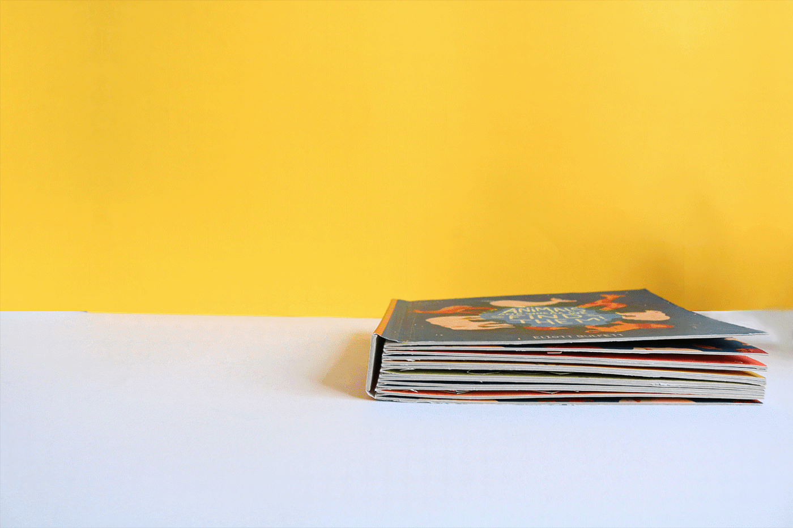

第一部・狹義相對論第一章 狹義相對論
1.1 光的幾何化、世界的幾何化
看 YouTube 影片時，YouTuber 活在二維的平面裡，加上一條播放時間軸，就成了三維時空。這就是翻頁書（flip book）：許多張二維照片完全重疊，每張只差一點點，快速翻過去就變成影片。所謂的時間軸，只是頁數，也許根本不存在時間。
光也在書裡：每翻一頁，光前進固定的距離。光速 \(c\) 只是「平面距離」與「頁數」之間的換算常數——頁數乘上 \(c\)，就是距離。這是光的幾何化。每翻一頁，任何東西最多只能走這麼遠。這道上限像一個被人寫死的參數——也許世界是虛擬的，寫死它，是怕它失控崩潰。
我們的三維空間，其實是一本立體的翻頁書（pop-up flip book）：每一頁不是一張照片，而是一整個三維世界。這是世界的幾何化。

Einstein 提出兩個假設：
相對性原理：物理定律在所有慣性基準（不加速的觀察者）中形式相同。
光速不變：真空中光速 \(c\) 對所有慣性觀察者都相同，與光源或觀察者的運動無關。
第二條是實驗事實（Michelson–Morley 實驗測不到任何方向的光速差異）。 它與「速度相加」的日常直覺矛盾，所以時間與空間的觀念必須修改。以下逐一算出要修改成什麼樣子。
1.2 時間膨脹：向車頂發射的光
電車地板有光源，向正上方的天花板鏡子發光，光反射回地板。地板到鏡子高度為 \(h\)。
車上基準：光直上直下，來回耗時 \(\dfrac{2h}{c}\)。
地上基準：光來回期間電車在移動，所以光走的是斜線，總路徑比 \(2h\) 長。 光速仍是 \(c\)，路徑較長，耗時就比 \(\dfrac{2h}{c}\) 長。
算出到底耗時多久。由上圖，光爬升 \(h\) 需時：
$$ \Delta{}^{\text{地}}t = \frac{h}{\sqrt{c^2-v^2}} = \frac{h}{c}\,\frac{1}{\sqrt{1-\left(\frac{v}{c}\right)^2}} $$車上經過 \(\dfrac{h}{c}\) 的時間，地上就經過它的 \(\dfrac{1}{\sqrt{1-\left(\frac{v}{c}\right)^2}}\) 倍。 這個因子之後不斷出現，記作：
$$ \boxed{\;\gamma \equiv \frac{1}{\sqrt{1-\left(\frac{v}{c}\right)^2}} \;>\; 1\;} $$同一個現象，地上基準測得的時間比車上基準長 \(\gamma\) 倍——運動中的時鐘走得慢。
1.3 長度收縮
列車以 \(v\) 掠過地面上相距 \({}^{\text{地}}L\) 的兩點。 速度＝長度／時間，而這個相對速度，車上與地上測得的大小必須相同：
$$ v = \frac{{}^{\text{地}}L}{\Delta{}^{\text{地}}t} = \frac{{}^{\text{車}}L}{\Delta{}^{\text{車}}t} $$「經過甲點」與「經過乙點」兩個事件都發生在車頭同一位置， 車上的鐘正是 1.2 節走得慢的那個：\(\Delta{}^{\text{車}}t = \dfrac{\Delta{}^{\text{地}}t}{\gamma}\)。 分母變小，分子必須跟著變小，比值才能不變：
$$ \boxed{\;{}^{\text{車}}L = \frac{{}^{\text{地}}L}{\gamma} = \sqrt{1-\left(\frac{v}{c}\right)^2}\; {}^{\text{地}}L\;} $$運動中的觀察者測地面的長度，縮短 \(\dfrac{1}{\gamma}\) 倍；由相對性原理，地上測運動中的列車也一樣短 （沿運動方向；垂直方向不變）。合併 1.2 與 1.3： 有相對速度，看對方在做慢動作，而且看扁他。
1.4 Lorentz 變換
事件在基準 1 的座標為 \(({}^{1}x,\ {}^{1}t)\)，在基準 2（以 \(v\) 前進）的座標為 \(({}^{2}x,\ {}^{2}t)\)。 用 1.3、1.2 的結論直接組出換算式。
第一式（長度收縮）：在基準 2 的時刻 \({}^{2}t\)，地面原點位於 \(-v\cdot{}^{2}t\)， 所以事件離地面原點的距離，用基準 2 的尺量是 \({}^{2}x + v\cdot{}^{2}t\)。 但這段距離在地面上的長度是 \({}^{1}x\)，而基準 2 看地面的長度縮短 \(\dfrac{1}{\gamma}\) 倍（1.3 節）：
$$ {}^{2}x + v\cdot{}^{2}t = \frac{{}^{1}x}{\gamma} \qquad\Longrightarrow\qquad {}^{1}x = \gamma\,({}^{2}x + v\cdot{}^{2}t) $$第二式（對稱性）：把時間乘上 \(c\) 寫成 \(c\cdot{}^{1}t\)，單位就是距離—— 時間和位置是同一種量，\(c\) 只是換算常數。第一式即
$$ {}^{1}x = \gamma\left({}^{2}x + \tfrac{v}{c}\cdot c\cdot{}^{2}t\right) $$光速不變說：\({}^{1}x = c\cdot{}^{1}t\) 與 \({}^{2}x = c\cdot{}^{2}t\) 是同一條光——\({}^{1}x\) 與 \(c\cdot{}^{1}t\) 地位完全對稱。 把第一式的 \({}^{1}x \leftrightarrow c\cdot{}^{1}t\)、\({}^{2}x \leftrightarrow c\cdot{}^{2}t\) 互換，式子必須照樣成立，直接得：
$$ c\cdot{}^{1}t = \gamma\left(c\cdot{}^{2}t + \tfrac{v}{c}\cdot {}^{2}x\right) $$（驗證：代入 \({}^{2}x = c\cdot{}^{2}t\)，兩式右邊相等，得 \({}^{1}x = c\cdot{}^{1}t\)——光在兩個基準都是光速。）
第二式除以 \(c\) 還原回 \({}^{1}t\)，整理：
$$ \boxed{\;{}^{1}x = \gamma\,({}^{2}x + v\cdot{}^{2}t), \qquad {}^{1}t = \gamma\left({}^{2}t + \frac{v}{c^2}\cdot{}^{2}x\right)\;} $$這就是Lorentz 變換。反變換把 \(v\) 換成 \(-v\)：
$$ {}^{2}x = \gamma\,({}^{1}x - v\cdot{}^{1}t), \qquad {}^{2}t = \gamma\left({}^{1}t - \frac{v}{c^2}\cdot{}^{1}x\right) $$1.2 的時間膨脹是特例：取 \({}^{2}x = 0\)，得 \({}^{1}t = \gamma\cdot{}^{2}t\)。 當 \(v \ll c\) 時 \(\gamma \to 1\)、\(\frac{v}{c^2}\cdot{}^{2}x \to 0\)，退回伽利略變換 \({}^{1}x = {}^{2}x + v\cdot{}^{1}t\)、\({}^{1}t = {}^{2}t\)。
1.5 新的速度合成則
物體從原點出發等速運動，基準 1 測得速度 \({}^{1}v = \dfrac{{}^{1}x}{{}^{1}t}\)， 基準 2 測得 \({}^{2}v = \dfrac{{}^{2}x}{{}^{2}t}\)，基準間速度為 \(v\)。將 Lorentz 變換代入：
$$ {}^{1}v = \frac{{}^{1}x}{{}^{1}t} = \frac{\gamma({}^{2}x + v\cdot{}^{2}t)}{\gamma\left({}^{2}t + \frac{v}{c^2}\cdot{}^{2}x\right)} = \frac{\frac{{}^{2}x}{{}^{2}t} + v}{1 + \frac{v}{c^2}\frac{{}^{2}x}{{}^{2}t}} $$ $$ \boxed{\;{}^{1}v = \frac{{}^{2}v + v}{1 + \dfrac{{}^{2}v\,v}{c^2}}\;} $$這條式子取代 \({}^{1}v = {}^{2}v + v\)。驗證三種情況：
日常速度：\({}^{2}v, v \ll c\) 時分母趨近 1，回到 \({}^{1}v = {}^{2}v + v\)。 日常生活察覺不到差異，理所當然。
光：代入 \({}^{2}v = c\)：
$$ {}^{1}v = \frac{c + v}{1 + \frac{v}{c}} = \frac{(c+v)\,c}{c + v} = c $$不論 \(v\) 多大，結果都是 \(c\)——光速不變被公式自動保證。
高速疊加：以 \(0.9c\) 行駛的電車上，把球以 \(0.9c\)（相對電車）向前丟。地上看：
$$ {}^{1}v = \frac{0.9c + 0.9c}{1 + 0.9^2} = \frac{1.8c}{1.81} \approx 0.994c $$怎麼疊都不會超過 \(c\)。
1.6 動量不守恆？
質量同為 \(m\) 的 A、B 以速率 \(v\) 相向飛行。把 A、B 看成一個整體，總質量 \(M\)；它的質心 C 是一個虛擬的點，不是實物。 左右對稱，C 靜止。
換到跟著 B 移動的基準（B 靜止）；\({}^{B}v_{A}\) 表示在 B 的基準裡量到的 A 的速度：
相對論之前，速度直接相加： \({}^{B}v_{A} = 2v\)、\({}^{B}v_{C} = v\)。整體的動量等於 A、B 的動量之和；用 \(p = mv\)：
$$ m\,(2v) = M\,v \qquad\Longrightarrow\qquad M = 2m $$動量相加，順便給出質量相加。但 1.5 節已經知道速度不能直接相加，真正的速度是
$$ {}^{B}v_{A} = \frac{2v}{1+\left(\frac{v}{c}\right)^2}\,, \qquad {}^{B}v_{C} = v $$代回：\(m\cdot{}^{B}v_{A} = Mv\)。若 \(M = 2m\)，左邊小於右邊，等號不成立。 我們選擇保住「整體的動量＝各部分的動量之和」——這只是人類的假設，不然沒有抓手——於是 \(p = mv\) 這個定義非修不可。
1.7 動量的修正
設修正後的動量為
$$ p = k(v)\, m v $$\(k\) 是所有物體共用的修正函數，\(k(0) = 1\)。 \(k\) 無單位，所以它只能依賴無單位的 \(\frac{v}{c}\)；\(v \ll c\) 時 \(k \approx 1\)，回到牛頓。 B 基準的動量相加式變成
$$ k({}^{B}v_{A})\, m\cdot{}^{B}v_{A} = k(v)\, M v \tag{1} $$缺 \(M\)。讓整個系統多帶一個縱向速度—— 換到往下以 \(u\) 移動的基準，所有東西多了向上的 \(u\)：
共同漂移 \(u\) 給每個縱向動量乘上同一個因子 \(k(u)\)，其餘由橫向速率決定：
$$ \begin{aligned} \text{A}&:\ k(u)\,k(v)\,mu\\ \text{B}&:\ k(u)\,k(v)\,mu\\ \text{C}&:\ k(u)\,k(0)\,Mu = k(u)\,Mu \end{aligned} $$縱向動量相加：
$$ k(u)\,k(v)\,mu + k(u)\,k(v)\,mu = k(u)\,Mu $$兩邊除以 \(k(u)\,u\)：
$$ 2\,k(v)\, m = M \tag{2} $$把 \({}^{B}v_{A} = \dfrac{2v}{1+\left(\frac{v}{c}\right)^2}\) 與 (2) 的 \(M = 2k(v)m\) 代入 (1)：
$$ k({}^{B}v_{A})\; m\;\frac{2v}{1+\left(\frac{v}{c}\right)^2} \;=\; k(v)\cdot 2k(v)m \cdot v $$兩邊除以 \(2mv\)：
$$ \frac{k({}^{B}v_{A})}{1+\left(\frac{v}{c}\right)^2} = k(v)^2 \qquad\Longrightarrow\qquad k({}^{B}v_{A}) = k(v)^2\left(1+\left(\tfrac{v}{c}\right)^2\right) \tag{3} $$還差一條。B 基準看到的是「A 以 \({}^{B}v_{A}\) 飛向靜止的 B，質心 C 以 \(v\) 前進」—— 對它重施故技：全體共同帶上縱向的 \(u\)，橫向照舊。
縱向動量相加：
$$ k(u)\,k({}^{B}v_{A})\,mu + k(u)\,k(0)\,mu = k(u)\,k(v)\,Mu $$兩邊除以 \(k(u)\,mu\)，再用 (2) 的 \(M = 2k(v)m\)：
$$ k({}^{B}v_{A}) + 1 = k(v)\,\frac{M}{m} = 2k(v)^2 \qquad\Longrightarrow\qquad k({}^{B}v_{A}) = 2k(v)^2 - 1 \tag{4} $$(3)、(4) 聯立，消去 \(k({}^{B}v_{A})\)：
$$ 2k(v)^2 - 1 = k(v)^2\left(1+\left(\tfrac{v}{c}\right)^2\right) \qquad\Longrightarrow\qquad k(v)^2\left(1-\left(\tfrac{v}{c}\right)^2\right) = 1 $$ $$ k(v) = \frac{1}{\sqrt{1-\left(\frac{v}{c}\right)^2}} = \gamma \qquad\Longrightarrow\qquad \boxed{\;p = \gamma m v\;} $$修正函數不多不少，正是 1.2 節的 \(\gamma\)。 順帶 (2) 說 \(M = 2\gamma m > 2m\)：整體的質量比 \(2m\) 大—— 動量相加保住了，質量相加沒有。
1.8 能量的修正
1.7 節的結尾：\(M = 2\gamma m\)，整體的質量不等於各部分的質量之和。這個 \(\gamma m\) 到底是啥？ 把 \(\gamma\) 逐項展開看看：
$$ \gamma = \frac{1}{\sqrt{1-\left(\frac{v}{c}\right)^2}} = 1 + \tfrac12\left(\tfrac{v}{c}\right)^2 + \tfrac38\left(\tfrac{v}{c}\right)^4 + \tfrac{5}{16}\left(\tfrac{v}{c}\right)^6 + \cdots $$ $$ \gamma m = m + \frac{\tfrac12 m v^2}{c^2} + \frac{\tfrac38 m v^4}{c^4} + \cdots $$第二項的分子是牛頓動能 \(\tfrac12 mv^2\)，卻整個被 \(c^2\) 除著——怪怪的。 那就兩邊乘上 \(c^2\)（一切都是人類的嘗試，不神聖）：
$$ \gamma m c^2 = mc^2 + \tfrac12 m v^2 + \tfrac38\, \frac{m v^4}{c^2} + \cdots $$順眼了：第二項正是牛頓動能，後面的項是高速修正（\(v \ll c\) 時小到可忽略）； 第一項與運動無關——物體光是存在，就帶著 \(mc^2\)。 於是 \(M = 2\gamma m\) 兩邊乘上 \(c^2\)，猜測這可能是能量：
$$ Mc^2 = \gamma m c^2 + \gamma m c^2 $$「動能＋一筆固定存款」——人類目前猜測，這個量就是能量：
$$ \boxed{\;E = \gamma m c^2\;} \qquad\qquad v = 0:\ \boxed{\;E_0 = mc^2\;} $$1.9 動量與能量的關係
手上兩條式子，都含著隨基準而變的 \(v\)：
$$ E = \gamma m c^2, \qquad p = \gamma m v $$把 \(v\) 消掉。平方相減，用 \(\gamma^2\left(1-\frac{v^2}{c^2}\right) = 1\)：
$$ E^2 - (pc)^2 = \gamma^2 m^2 c^4 - \gamma^2 m^2 v^2 c^2 = \gamma^2 m^2 c^4 \left(1 - \frac{v^2}{c^2}\right) = (mc^2)^2 $$ $$ \boxed{\;E^2 - (pc)^2 = (mc^2)^2\;} $$\(E\) 與 \(p\) 各自隨基準改變，但這個組合卻對所有基準都是同一差——\(mc^2\) 的平方。
改成相除，消掉的就是質量：
$$ \frac{E}{pc} = \frac{\gamma m c^2}{\gamma m v c} \qquad\Longrightarrow\qquad \boxed{\;\frac{E}{pc} = \frac{c}{v}\;} $$這兩條框起來的式子裡沒有 \(\gamma\)，所以連 \(v = c\) 都能用——比 \(E = \gamma mc^2\)、\(p = \gamma mv\) 更廣。 代 \(m = 0\) 進第一條：\(E = pc\)；再代進第二條：\(\frac{c}{v} = \frac{E}{pc} = 1\)—— 質量為零的粒子照樣有能量與動量，但被迫永遠以光速跑，這是否暗示就是光子？ 反過來，\(v = c \Rightarrow E = pc \Rightarrow m = 0\)：這是否暗示以光速跑的東西必定沒有質量？
低速檢查：把第一條開根號、逐項展開（\(\sqrt{1+x} = 1 + \tfrac12 x - \tfrac18 x^2 + \cdots\)）：
$$ E = mc^2\sqrt{1+\left(\tfrac{p}{mc}\right)^2} = mc^2 + \frac{p^2}{2m} - \frac{p^4}{8m^3c^2} + \cdots $$第二項正是牛頓動能的動量寫法 \(\dfrac{p^2}{2m}\)，其後是高速修正。
第二部・廣義相對論第二章 廣義相對論
2.1 複習：Doppler 效應
聲音在空氣中以 \(v\) 傳播。波源每秒發出 \(f_0\) 個波前，相鄰波前相距
$$ \lambda = \frac{v}{f_0} $$波源以 \(v_s\) 朝觀察者移動：相鄰波前發出相隔 \(\dfrac{1}{f_0}\)， 其間前一個波前走 \(\dfrac{v}{f_0}\)，波源前進 \(\dfrac{v_s}{f_0}\)：
$$ \lambda_s = \frac{v}{f_0} - \frac{v_s}{f_0} = \frac{v - v_s}{f_0} \qquad\Longrightarrow\qquad f = \frac{v}{\lambda_s} = \frac{v}{\dfrac{v - v_s}{f_0}} = f_0\,\frac{v}{v - v_s} $$觀察者以 \(v_o\) 朝波源移動：波前間距仍是 \(\lambda\)，但以 \(v + v_o\) 掠過觀察者：
$$ f = \frac{v + v_o}{\lambda} = f_0\,\frac{v + v_o}{v} $$兩者同時發生：觀察者以 \(v + v_o\) 掠過壓縮後的 \(\lambda_s\)：
$$ f = \frac{v + v_o}{\lambda_s} = f_0\,\frac{v + v_o}{v - v_s} $$遠離時 \(v_s \to -v_s\)、\(v_o \to -v_o\)。合併寫成（靠近取上號、遠離取下號）：
$$ \boxed{\; f = f_0\,\frac{v \pm v_o}{v \mp v_s} \;} $$2.2 加速的火箭：上下的鐘
火箭以加速度 \(a\) 向上加速，底到頂高 \(h\)。底部每隔 \(T_{\text{下}}\) 向上發一道光， 頂部每隔 \(T_{\text{上}}\) 收到一道。\(T_{\text{上}}\) 是多少？
【方法一】
火箭在加速，不是慣性基準——發光那一刻火箭速度為 \(v\)。 光飛到頂部需時 \(\Delta T\)：光走了 \(c\,\Delta T\)，頂部跑了 \(v\,\Delta T + \tfrac12 a\,\Delta T^2\)，兩者之差是 \(h\)：
$$ h = c\,\Delta T - v\,\Delta T - \tfrac12 a\,\Delta T^2 $$最後一項極小，丟掉：
$$ (c - v)\,\Delta T = h \qquad\Longrightarrow\qquad \Delta T = \frac{h}{c - v} $$這條式子在相對論裡成立嗎？速度不是不能直接相加？——1.5 的合成則管的是換基準： 同一個物體，基準 1 量到 \({}^{1}v\)、基準 2 量到 \({}^{2}v\)，兩者怎麼換。這裡沒有換基準： 光的位置 \(c\,\Delta T\)、頂部的位置 \(h + v\,\Delta T + \tfrac12 a\,\Delta T^2\)， 全是同一個慣性基準、同一套鐘尺量出來的座標，「光追上頂部」就是兩個座標相等，座標相減是純算術。 \(c - v\) 也不是任何東西的速度，是間距縮小的速率——這種量本來就可以超過 \(c\)（兩道光對開，間距以 \(2c\) 縮小，完全合法）。
這段時間頂部被加速，收到光時速度為 \(v + a\dfrac{h}{c - v}\)。
套 Doppler 公式——波源以 \(v\) 朝觀察者、觀察者以 \(v + a\dfrac{h}{c - v}\) 遠離：\(f = f_0\,\dfrac{c - v_o}{c - v_s}\)。 代 \(v_s = v\)、\(v_o = v + a\dfrac{h}{c - v}\)、\(f_0 = \dfrac{1}{T_{\text{下}}}\)、\(f = \dfrac{1}{T_{\text{上}}}\)：
$$ \frac{1}{T_{\text{上}}} = \frac{1}{T_{\text{下}}}\,\frac{c - v - a\dfrac{h}{c - v}}{c - v} = \frac{1}{T_{\text{下}}}\left(1 - \frac{ah}{(c - v)^2}\right) $$逐項展開 \(\dfrac{1}{1-x} = 1 + x + x^2 + \cdots\)：
$$ \frac{ah}{(c - v)^2} = \frac{ah}{c^2}\cdot\frac{1}{\left(1 - \frac{v}{c}\right)^2} = \frac{ah}{c^2}\left(1 + \frac{v}{c} + \left(\frac{v}{c}\right)^2 + \cdots\right)^2 = \frac{ah}{c^2} + 2\,\frac{ah}{c^2}\cdot\frac{v}{c} + \cdots $$第二項起都是 \(\dfrac{ah}{c^2}\) 再乘上 \(\dfrac{v}{c}\) 的次方——火箭速度太慢，全部丟掉：
$$ \frac{1}{T_{\text{上}}} = \frac{1}{T_{\text{下}}}\left(1 - \frac{ah}{c^2}\right) \qquad\Longrightarrow\qquad T_{\text{上}} = \frac{T_{\text{下}}}{1 - \dfrac{ah}{c^2}} $$逐項展開 \(\dfrac{1}{1-x} = 1 + x + x^2 + \cdots\)，留一次項：
$$ T_{\text{上}} = T_{\text{下}}\left(1 + \frac{ah}{c^2} + \left(\frac{ah}{c^2}\right)^2 + \cdots\right) \qquad\Longrightarrow\qquad \boxed{\; \frac{T_{\text{上}} - T_{\text{下}}}{T_{\text{下}}} \approx \frac{ah}{c^2} \;} $$【方法二】
不套 Doppler，直接追兩道光。第一道光需時 \(\dfrac{h}{c - v}\)（同上）； 第二道光晚 \(T_{\text{下}}\) 發出，火箭速度已是 \(v + a\,T_{\text{下}}\)，需時 \(\dfrac{h}{c - v - a\,T_{\text{下}}}\)。 第二道光晚 \(T_{\text{下}}\) 出發、又多了兩段飛行時間之差，頂部收到的間隔：
$$ T_{\text{上}} = T_{\text{下}} + \frac{h}{c - v - a\,T_{\text{下}}} - \frac{h}{c - v} = T_{\text{下}} + \frac{h\,(c - v) - h\,(c - v - a\,T_{\text{下}})}{(c - v - a\,T_{\text{下}})(c - v)} = T_{\text{下}} + \frac{a\,h\,T_{\text{下}}}{(c - v)(c - v - a\,T_{\text{下}})} $$ $$ \frac{T_{\text{上}} - T_{\text{下}}}{T_{\text{下}}} = \frac{ah}{(c - v)(c - v - a\,T_{\text{下}})} = \frac{ah}{c^2}\cdot\frac{1}{1 - \dfrac{v}{c}}\cdot\frac{1}{1 - \dfrac{v + a\,T_{\text{下}}}{c}} $$兩個因子各逐項展開 \(\dfrac{1}{1-x} = 1 + x + x^2 + \cdots\)：
$$ \frac{T_{\text{上}} - T_{\text{下}}}{T_{\text{下}}} = \frac{ah}{c^2}\left(1 + \frac{v}{c} + \left(\frac{v}{c}\right)^2 + \cdots\right)\left(1 + \frac{v + a\,T_{\text{下}}}{c} + \left(\frac{v + a\,T_{\text{下}}}{c}\right)^2 + \cdots\right) = \frac{ah}{c^2} + \frac{ah}{c^2}\cdot\frac{v}{c} + \frac{ah}{c^2}\cdot\frac{v + a\,T_{\text{下}}}{c} + \cdots $$第二項起都是 \(\dfrac{ah}{c^2}\) 再乘上火箭速度除以 \(c\)，丟掉：
$$ \frac{T_{\text{上}} - T_{\text{下}}}{T_{\text{下}}} \approx \frac{ah}{c^2} $$與方法一相同。
\(T_{\text{上}} - T_{\text{下}} > 0\)，所以 \(T_{\text{上}} > T_{\text{下}}\)。
上面已經到了第 10 秒了，下面怎麼才到了 8 秒，才剛傳來第 8 秒的時針反射光！
這與 1.2「運動中的鐘慢」不同——兩個鐘之間沒有相對速度——是加速度帶來的新機制。
對比的基準點在哪裡？取決於把「測量起點（原點）」設在火箭的哪裡。
1. 關鍵在於公式裡的那個「1」
$$ T_{\text{上}} = T_{\text{下}}\left(1 + \frac{ah}{c^2}\right) $$「1」完全等同於沒有加速度（\(a = 0\)，等速火箭）時的標準時間流速；\(\dfrac{ah}{c^2}\) 是加速度 \(a\) 與高度差 \(h\) 帶來的修正。 推導時以火箭底部為原點（\(h = 0\)），底部的公式就是
$$ T = T_{\text{標準}} \times (1 + 0) = T_{\text{標準}} $$有加速度的火箭底與沒有加速度的火箭底，鐘的走速（底片張數密度）一樣；頂部 \(h > 0\)，底片張數變多（時間變快）。
2. 如果把基準點改設在「火箭中心」呢？
原點可以自由選擇。火箭高 100 公尺，把正中間（50 公尺處）設為原點（\(h = 0\)）：中心的走速與無加速火箭底片張數一樣（時間流速一樣），頂部（100 公尺處，\(h = 50\)）底片張數變多（時間變快），底部（0 公尺處，\(h = -50\)）底片張數變少（時間變慢）。把基準原點設在哪裡，在物理學上稱為「局部慣性系」的選擇。
2.3 引力幾何化。人類的猜測：加速度＝重力
站在地面，腳底被地面頂著；站在 2.2 那艘以 \(a = g\) 加速的火箭裡，腳底一樣被地板頂著。關在艙裡，分不出兩者—— 人類於是猜測：加速度與重力是同一件事（等效原理，Einstein 1907）。這只是猜測，不然沒有抓手。
把 2.2 的 \(a\) 換成 \(g\)：
$$ \boxed{\; \frac{T_{\text{上}} - T_{\text{下}}}{T_{\text{下}}} \approx \frac{gh}{c^2} \;} $$高處的鐘比低處快——實驗事實：1960 年 Pound 與 Rebka 在 22.5 m 的塔裡用 Fe-57 原子核發出的光量到這個差，吻合到 10%； 之後從一萬公里高的衛星（1976，\(7\times10^{-5}\)）到 33 cm（2010）、1 mm 高的原子雲（2022），六十多年沒有一次偏離 \(\dfrac{gh}{c^2}\)。 GPS 衛星的鐘在高處每天比地面快 45 μs（運動的鐘慢 7 μs，淨快 38 μs），不修正，定位每天累積十公里誤差。
【引力幾何化的最簡例：光往下彎】
一道光水平前進，波前上下兩端高度差 \(h\)。以下端的鐘為準：下端過 1 秒，上端已經過了 \(1 + \dfrac{gh}{c^2}\) 秒，多 \(\dfrac{gh}{c^2}\) 秒。 兩端各自量到的光速都是 \(c\)，所以這 1 秒裡上端的光走了 \(c\left(1 + \dfrac{gh}{c^2}\right)\)，比下端多 \(c\,\dfrac{gh}{c^2}\)—— 波前上端跑得多、下端跑得少，整個波前向下轉。光線垂直於波前，所以光往下彎。
波前轉動的角速度＝上下端速度差除以 \(h\)：
$$ \frac{c\,\dfrac{gh}{c^2}}{h} = \frac{g}{c} $$每秒偏轉 \(\dfrac{g}{c}\)。一顆以速度 \(c\) 水平丟出的石頭，垂直速度每秒增加 \(g\)，方向每秒也偏 \(\dfrac{g}{c}\)——一模一樣。 推導裡沒有任何「力」，只用了不同高度的時間走速不同，光就往下彎。引力是否根本不是力，而是時空的形狀？——這是「引力幾何化」的猜測。
2.4 （未完工）
翻書讓光宏觀上等速前進；但光其實是螺旋式前進——相位螺旋式變化。每翻幾頁書，螺旋一次。
從側面看螺旋，就是簡諧運動（simple harmonic motion），也就是彈簧：彈力位能與動能不斷互換，合起來是一個能量包。這個能量包對外作功時，人類觀察到的是電磁力；但也許電磁力根本不存在，只是時空的形狀造成的。
人類量測到的是： 光打在金屬上打出電子，電子的能量只看光每秒轉幾圈，與亮度無關（Lenard 1902 發現，Millikan 1916 量準）。 圓偏振光照在一片用細絲吊著的波片上，會把它扭轉（Beth 1936）：每顆光子帶著固定的角動量 \(\dfrac{h}{2\pi}\)。角動量固定，轉得越快，能量越多：
$$ E = \frac{h}{2\pi}\times 2\pi\nu = h\,\nu $$2.5 （未完工）
【質量能量化：沒有質量的質量】
兩道能量各為 \(E\) 的光反向對飛，關在一個無質量的盒子裡。盒子整體：能量 \(2E\)，動量 \(\dfrac{E}{c} - \dfrac{E}{c} = 0\)（1.9：光的 \(E = pc\)）。 代入 1.9 的 \(E^2 - (pc)^2 = (Mc^2)^2\)：
$$ (2E)^2 - 0 = (Mc^2)^2 \qquad\Longrightarrow\qquad M = \frac{2E}{c^2} $$裡面沒有任何有質量的東西，盒子卻有質量——推它會抗拒，放在地上會有重量。
這不是空想，是量得到的事實。質子由夸克與膠子組成：膠子沒有質量，三個夸克的靜止質量合計只佔質子質量的 1%，剩下的 99% 是關在裡面的運動能與場能（格點 QCD，2018）。 你身上絕大部分的重量，就是這種沒有質量的質量。
反過來的過程也量得到。質子與中子結合成氘核時，放出一顆能量 2.224 MeV 的光，氘核就比兩者相加輕了這麼多。 2005 年的實驗一邊用光的波長量能量、一邊用離子在磁場中的迴旋頻率量質量，兩邊核對 \(E = mc^2\)，差距不到 0.00004%。
【位能幾何化的最簡例：位能就是鐘的快慢】
一顆質量 \(m\) 的石頭抬高 \(h\)，位能多了 \(mgh\)。拆開來寫：
$$ mgh = mc^2\cdot\frac{gh}{c^2} $$\(mc^2\) 是 1.8 的靜止能量；\(\dfrac{gh}{c^2}\) 是 2.2 的結果，上端的鐘每秒比下端多走的秒數。石頭在高處的總能量：
$$ mc^2 + mgh = mc^2\left(1 + \frac{gh}{c^2}\right) $$括號裡正是高處鐘的走速（下端的鐘為 1）。靜止石頭的能量＝\(mc^2\) 乘上它所在處鐘的走速。
光往下彎、石頭有位能，用的是同一張時間地形圖。位能是否根本不在石頭裡，而是石頭所在處時間的快慢？——這是「位能幾何化」的猜測。
\(\dfrac{gh}{c^2}\) 是 2.2 丟掉高次項的結果。不丟，有兩個精確版本。
等加速的火箭：以火箭自己的尺量 \(h\)、以底部量到的加速度為 \(g\)，上下鐘的比值精確就是 \(1 + \dfrac{gh}{c^2}\)，一項都不必丟。四步。
一、把 1.4 的變換代入 \((c\cdot{}^{1}t)^2 - {}^{1}x^2\)：
$$ \begin{aligned} (c\cdot{}^{1}t)^2 - {}^{1}x^2 &= \gamma^2\left[\left(c\cdot{}^{2}t + \tfrac{v}{c}\cdot{}^{2}x\right)^2 - \left({}^{2}x + \tfrac{v}{c}\cdot c\cdot{}^{2}t\right)^2\right]\\ &= \gamma^2\left(1 - \tfrac{v^2}{c^2}\right)\left[(c\cdot{}^{2}t)^2 - {}^{2}x^2\right]\\ &= (c\cdot{}^{2}t)^2 - {}^{2}x^2 \end{aligned} $$換基準，這個差不變。
二、火箭底部的世界線取雙曲線 \({}^{1}x^2 - (c\cdot{}^{1}t)^2 = \left(\dfrac{c^2}{g}\right)^2\)。兩邊對 \({}^{1}t\) 微分：
$$ 2\cdot{}^{1}x\,\frac{d{}^{1}x}{d{}^{1}t} - 2c^2\cdot{}^{1}t = 0 \qquad\Longrightarrow\qquad v = \frac{c^2\cdot{}^{1}t}{{}^{1}x} $$再微分一次：
$$ \frac{dv}{d{}^{1}t} = \frac{c^2}{{}^{1}x} - \frac{c^2\cdot{}^{1}t\,v}{{}^{1}x^2} = \frac{c^2}{{}^{1}x^3}\left({}^{1}x^2 - c^2\cdot{}^{1}t^2\right) = \frac{c^2}{{}^{1}x^3}\cdot\frac{c^4}{g^2} $$\({}^{1}t = 0\) 時 \({}^{1}x = \dfrac{c^2}{g}\)、\(v = 0\)，代入得 \(\dfrac{dv}{d{}^{1}t} = g\)。由一，這條雙曲線在任何慣性基準看都是同一條；換到與火箭某一瞬間同速的基準，那一瞬間就是它的 \({}^{2}t = 0\)，加速度是 \(g\)。火箭每一瞬間都感覺到 \(g\)——這就是等加速。
三、與火箭某一瞬間同速 \(v\) 的基準，它的「同一時刻」是 \({}^{2}t = 0\)。由 1.4，\(c\cdot{}^{2}t = \gamma\left(c\cdot{}^{1}t - \tfrac{v}{c}\cdot{}^{1}x\right) = 0\)，即 \(c\cdot{}^{1}t = \tfrac{v}{c}\cdot{}^{1}x\)：一條過原點的直線。火箭那一點的 \(v = \dfrac{c^2\cdot{}^{1}t}{{}^{1}x}\) 正好落在這條線上。所以火箭每一瞬間的「同時線」都過同一個點：原點是轉軸，同時線像指針掃過。
四、火箭頂部在底部上方 \(h\)（火箭自己的尺）：世界線是同心的另一條雙曲線 \({}^{1}x^2 - (c\cdot{}^{1}t)^2 = \left(\dfrac{c^2}{g} + h\right)^2\)。它是底部那條以原點為中心放大 \(\dfrac{\frac{c^2}{g} + h}{\frac{c^2}{g}}\) 倍的圖形；同時線是過原點的直線，放大後還是自己。鐘自己走的時間：切成小段，每段在同速基準裡 \(\Delta({}^{2}x) = 0\)，由一，\((c\,\Delta({}^{2}t))^2 = (c\,\Delta({}^{1}t))^2 - (\Delta({}^{1}x))^2\)；全部座標放大幾倍，每一段的鐘時間就放大幾倍。所以兩條同時線之間：
$$ \frac{T_{\text{上}}}{T_{\text{下}}} = \frac{\dfrac{c^2}{g} + h}{\dfrac{c^2}{g}} = 1 + \frac{gh}{c^2} $$沒有近似。順帶：頂部感覺到的加速度是 \(\dfrac{c^2}{\frac{c^2}{g} + h} = \dfrac{g}{1 + \frac{gh}{c^2}}\)，比底部小。
真實的星球：地球的 \(g\) 隨高度變小，等加速火箭只能模擬地表附近一小段。整顆星球外面的鐘走速，本書推不出來——要解 Einstein 方程（Schwarzschild 1916），這裡借用結果。離質量 \(M\) 的星球中心 \(r\) 處，靜止的鐘的走速（以無限遠處的鐘為 1）：
$$ \sqrt{1 - \frac{2GM}{rc^2}} $$\(G\) 是牛頓的重力常數，\(\dfrac{GM}{r^2}\) 是牛頓的 \(g\)。靜止石頭的能量仍是 \(mc^2\) 乘上鐘的走速：
$$ E = mc^2\sqrt{1 - \frac{2GM}{rc^2}} $$逐項展開（\(\sqrt{1-x} = 1 - \tfrac12 x - \tfrac18 x^2 - \cdots\)）：
$$ E = mc^2 - \frac{GMm}{r} - \frac{G^2M^2m}{2\,r^2c^2} - \cdots $$第二項是牛頓的位能 \(-\dfrac{GMm}{r}\)，第三項起是牛頓沒有的修正。兩個高度相比：
$$ \frac{T_{\text{上}}}{T_{\text{下}}} = \sqrt{\frac{1 - \dfrac{2GM}{(r+h)\,c^2}}{1 - \dfrac{2GM}{rc^2}}} $$只留 \(h\) 的一次項、再丟掉 \(\dfrac{2GM}{rc^2}\)（地球表面是 \(1.4\times10^{-9}\)），回到 \(1 + \dfrac{GMh}{r^2c^2} = 1 + \dfrac{gh}{c^2}\)。鐘走速在 \(r = \dfrac{2GM}{c^2}\) 處歸零——那是黑洞的邊界。
【能量幾何化的最簡例：同一顆光，不同高度不同能量】
一顆石頭靜止在高 \(h\) 處，能量 \(mc^2\left(1 + \dfrac{gh}{c^2}\right)\)。放手，落到底部時速度 \(v\)，能量 \(\gamma mc^2\)。能量守恆（人類的假設）：
$$ \gamma mc^2 = mc^2\left(1 + \frac{gh}{c^2}\right) $$在底部把石頭整個變成光（正負電子相撞就是這樣變成光的），光的能量 \(\gamma mc^2\)。把光射向上端，在上端把光變回一顆靜止的石頭，要花 \(mc^2\)。若光到上端時能量還是 \(\gamma mc^2\)，就白賺 \(mgh\)，再放手、再來一次——永動機。要不白賺，光爬到上端的能量必須剛好是 \(mc^2\)：
$$ \frac{E_{\text{上}}}{E_{\text{下}}} = \frac{mc^2}{\gamma mc^2} = \frac{1}{1 + \dfrac{gh}{c^2}} = \frac{T_{\text{下}}}{T_{\text{上}}} $$同一顆光，往上爬，能量變少，比例正好是下端鐘走速比上端鐘走速 \(\dfrac{T_{\text{下}}}{T_{\text{上}}}\)。反過來讀：用下端的鐘量，上端那顆光的能量＝它在上端當地的能量 \(E_{\text{上}}\) 乘上上端鐘的走速 \(1 + \dfrac{gh}{c^2}\)，等於 \(E_{\text{下}}\)——守恆。上一小節的石頭是同一條規則：當地能量 \(mc^2\)，乘上鐘的走速。能量隨鐘的走速換算，同一個東西換到鐘走得快的地方，用基準鐘看能量就多——這是「能量幾何化」的猜測。
實驗：Pound 與 Rebka 1960 年量的正是這個——Fe-57 原子核發出的光爬 22.5 m，能量少了 \(\dfrac{gh}{c^2} = 2.5\times10^{-15}\)，吻合到 10%；1965 年 Pound 與 Snider 做到 1%。2.2 說上端每秒收到的節拍也少了同樣的比例：光的能量與頻率同比例變化，是否暗示光的能量正比於頻率？
【動能幾何化的最簡例：斜邊比直角邊】
1.2 的光鐘：地上基準看光走斜邊，車上基準看光走直角邊，斜邊比直角邊是 \(\dfrac{c}{\sqrt{c^2 - v^2}} = \gamma\)。以地面的鐘為準：車上的鐘走 1 秒，地面過了 \(\gamma\) 秒。1.8 的能量：
$$ E = \gamma mc^2 = mc^2 \times \frac{\text{斜邊}}{\text{直角邊}} $$動能是多出來的部分：
$$ E - mc^2 = mc^2\,(\gamma - 1) = mc^2 \times \frac{\text{斜邊} - \text{直角邊}}{\text{直角邊}} $$動能＝自己的鐘比地面的鐘慢了多少，乘上 \(mc^2\)。位能是「所在處的鐘」比基準快多少，動能是「自己的鐘」比所在處的鐘慢多少，都是鐘的比值。一顆在高 \(h\) 處以速度 \(v\) 運動的石頭，兩個比值相乘：
$$ E = mc^2\left(1 + \frac{gh}{c^2}\right)\gamma $$實驗：CERN 1977 年儲存環裡的緲子，動量由磁場定出 \(\gamma = 29.3\)，量到的壽命是靜止時的 29.3 倍，吻合到千分之二——自己的鐘慢了 29.3 倍，能量就是靜止時的 29.3 倍。
【質量幾何化的最簡例：同一支箭的長度】
1.9：\(E^2 - (pc)^2 = (mc^2)^2\)，對所有基準同一差。畫出來：橫軸 \(pc\)、縱軸 \(E\)，一顆粒子是一支從原點出發的箭。換基準，箭的高（\(E\)）與寬（\(pc\)）都變，箭頭沿雙曲線滑動，\(\text{高}^2 - \text{寬}^2\) 不變——這是時空幾何裡的「長度」：轉動一根尺，長度不變（\((c\cdot{}^{1}t)^2 - {}^{1}x^2\) 同一個模樣，見上文等加速火箭的第一步）。
質量＝箭的長度。能量＝箭的高（時間方向的分量），動量＝箭的寬（空間方向的分量），動能＝箭比自己的長度多出的高 \(E - mc^2\)。靜止時箭直立，高就是長 \(mc^2\)。光子 \(m = 0\)：長度為零的箭，貼著 \(E = pc\) 這條線，有高有寬，卻沒有長度——1.9 說它被迫永遠以光速跑。質量是不是根本就是一個「長度」？——這是「質量幾何化」的猜測。
【質量幾何化的最簡例：靜止的粒子是一個鐘】
de Broglie 1924 年的猜測：一顆靜止的粒子裡有一個以頻率 \(f\) 振動的東西，振動的能量與靜止能量是同一份：
$$ \text{Planck 常數} \times f = mc^2 \qquad\Longrightarrow\qquad m = \frac{\text{Planck 常數}}{c^2}\, f $$質量＝這個鐘走的快慢，乘上常數。電子的 \(f\) 是 \(1.2\times10^{20}\) Hz，銫原子是 \(3.0\times10^{25}\) Hz。
實驗：2013 年 Müller 團隊做出一個鐘，節拍直接來自銫原子的這個 \(f\)——用質量報時；同一套裝置反過來量微觀質量，精度 \(4\times10^{-9}\)。2019 年起，公斤不再是巴黎那塊金屬，而是由 Planck 常數（定為 \(6.62607015\times10^{-34}\) J·s）與 \(c\)、秒定義；SI 手冊把定義反解成 1 kg ＝ \(1.4755\times10^{40}\) × Planck 常數 × 銫原子鐘頻率 ÷ \(c^2\)——質量的定義就是頻率乘上常數。質量是不是根本就是一個頻率？——這也是「質量幾何化」的猜測。
【質量幾何化的最簡例：質量是時間地形的坡度】
上面說鐘的走速每升高一公尺多 \(\dfrac{g}{c^2}\)；地表 \(\dfrac{g}{c^2} = 1.1\times10^{-16}\) 每公尺。反過來：不丟石頭、不用秤，量兩個高度的鐘差就得到 \(g\)：
$$ g = c^2 \times \text{坡度} $$牛頓：\(g = \dfrac{GM}{r^2}\)，所以
$$ M = \frac{c^2 r^2}{G} \times \text{坡度} $$地球：坡度 \(1.1\times10^{-16}\) 每公尺、\(r = 6371\) km，得 \(M = 6.0\times10^{24}\) kg——用兩個鐘秤地球。質量在這裡不是「多少東西」，而是「周圍時間地形有多陡」。質量如何造出這個地形是 Einstein 方程的內容，本書推不出來，這裡只借了牛頓的 \(\dfrac{1}{r^2}\)。
實驗：2010 年 NIST 把兩個離子鐘中的一個抬高 33 cm，就量到坡度；2020 年東京晴空塔，兩台可搬運的光晶格鐘一台在地面、一台在 450 m 觀景台，量到 \(4.9\times10^{-14}\) 的鐘差，與 \(\dfrac{gh}{c^2}\) 吻合到 \(10^{-5}\)；用鐘量高度已成為大地測量的新方法。
【質量幾何化的最簡例：看不見方向上的動量】
一個猜測（Kaluza 1921、Klein 1926）：空間多一個維度，捲成周長 \(L\) 的小圓，小到看不見。
沿小圓繞一圈的波必須接回自己，周長是波長的整數倍：
$$ n\,\lambda = L \qquad (n = 0, \pm 1, \pm 2, \cdots) $$動量與波長成反比（de Broglie：動量＝Planck 常數／波長），所以沿小圓的動量只能是「Planck 常數／\(L\)」的整數倍，\(n = 0\) 是不繞的波。
一顆粒子在我們的三維空間裡靜止，卻沿著小圓跑：它的動量 \(p\) 全在我們看不見的方向。 設它在五維裡沒有質量，1.9 的 \(m = 0\) 給 \(E = pc\)；我們看不見 \(p\)，只看到一顆靜止、能量 \(E\) 的東西，照 1.8 讀成 \(E = mc^2\)：
$$ mc^2 = pc \qquad\Longrightarrow\qquad m = \frac{p}{c} = \frac{n \cdot \text{Planck 常數}}{L\,c} $$「靜止質量」＝隱藏維度裡的動量，整個由幾何（\(L\)）決定。
【電荷也是幾何？最簡例：同一個小圓上的動量】
電荷從哪來？同一張圖：Kaluza–Klein 說，沿小圓跑的動量就是我們叫作「電荷」的東西——只能是「Planck 常數／\(L\)」的整數倍，正負對應繞行的兩個方向，\(n = 0\) 不帶電。 「為什麼電荷都是同一單位的整數倍、為什麼有正有負」在這個猜測裡有了幾何答案，而且同一個 \(n\) 同時給出電荷與質量。 用 Klein 1926 年的換算，\(L\) 約 \(10^{-32}\) m，比原子核小十七個量級；代回上一小節的質量公式，\(n = 1\) 的粒子質量約 \(10^{17}\) GeV，與電子的 \(5\times10^{-4}\) GeV 差二十個量級——這個矛盾是 Kaluza–Klein 被擱置的主因；現代弦論保留了捲起來的維度，把電子當成 \(n = 0\) 的模式，質量另有來源。 另一個幾何猜測是 Misner 與 Wheeler 1957 年的「沒有電荷的電荷」：電場線穿過一條時空蟲洞，從外面看一端像正電荷、另一端像負電荷，其實哪裡都沒有電荷——但這種電荷可以是任意值，解釋不了量子化，Wheeler 自己後來放棄。 現代規範理論把電荷看成粒子在一個「內部小圓」上的繞數（Weyl 1929、Wu–Yang 1975）：也是幾何，只是那個圓不在我們的時空裡。
實驗：額外維度至今毫無證據——桌上重力實驗到 30 μm、LHC 到 \(10^{-19}\) m 以下都沒有；質子與電子的電荷精確相反到 \(10^{-21}\)（相對值）；標準模型把電荷當輸入，解釋不了為什麼量子化。
第三部・電磁學第三章 電磁學
3.1 磁、光、電磁學的起點：等速運動壓扁電場
在 \(q\) 基準裡，試驗電荷 \(q\)（質量 \(m\)）此刻（\({}^{q}t = 0\)）靜止，電荷 \(Q\) 一直以 \({}^{q}V\) 等速移動。\(Q\) 基準跟著 \(Q\) 移動。
實驗（Bucherer 1908、Bertozzi 1964）：在 \(Q\) 基準裡，不論 \(q\) 跑多快，都有：
$$ \begin{gathered} \frac{d{}^{Q}\vec p_{q}}{d{}^{Q}t} = q\cdot{}^{Q}\vec E\\[6pt] {}^{Q}\vec p_{q} = {}^{Q}\gamma_{q}\,m\cdot{}^{Q}\vec v_{q}\ \text{（1.7）},\qquad {}^{Q}\gamma_{q} = \frac{1}{\sqrt{1 - \dfrac{|{}^{Q}\vec v_{q}|^2}{c^2}}} = {}^{q}\gamma_{Q}\\[6pt] {}^{Q}E = \frac{Q}{4\pi\varepsilon_0\cdot{}^{Q}r^2}\ \text{（Coulomb；}\varepsilon_0\text{ 是真空電容率）} \end{gathered} $$換到 \(q\) 基準之前先問：這個世界根本就不存在什麼「力」，力其實只是動量的變化÷時間？
$$ F = \frac{dp}{dt} $$垂直方向（沿圖中的 \(y\) 軸）：
$$ \begin{aligned} &\frac{dy}{d{}^{q}t} = 0 = \frac{dy}{d{}^{Q}t},\qquad |{}^{Q}\vec v_{q}| = {}^{q}V\ \text{（1.3）}\\[6pt] &d{}^{Q}t = {}^{q}\gamma_{Q}\,d{}^{q}t\ \text{（1.2）},\qquad d{}^{Q}y = d{}^{q}y = dy\ \text{（1.3）}\\[6pt] &d{}^{q}p_{q\perp} = d\Big({}^{q}\gamma_{q}\,m\,\frac{dy}{d{}^{q}t}\Big) = \underbrace{{}^{q}\gamma_{q}}_{1}\,m\,d\frac{dy}{d{}^{q}t} + m\,\underbrace{\frac{dy}{d{}^{q}t}}_{0}\,d{}^{q}\gamma_{q} = m\,d\frac{dy}{d{}^{q}t}\\[6pt] &d{}^{Q}p_{q\perp} = d\Big({}^{Q}\gamma_{q}\,m\,\frac{dy}{d{}^{Q}t}\Big) = {}^{Q}\gamma_{q}\,m\,d\frac{dy}{d{}^{Q}t} + m\,\underbrace{\frac{dy}{d{}^{Q}t}}_{0}\,d{}^{Q}\gamma_{q} = {}^{Q}\gamma_{q}\,m\,d\frac{dy}{d{}^{Q}t}\\[6pt] &d\frac{dy}{d{}^{Q}t} = d\Big(\frac{dy}{d{}^{q}t}\cdot\frac{d{}^{q}t}{d{}^{Q}t}\Big) = \underbrace{\frac{d{}^{q}t}{d{}^{Q}t}}_{\frac{1}{{}^{q}\gamma_{Q}}}\,d\frac{dy}{d{}^{q}t} + \underbrace{\frac{dy}{d{}^{q}t}}_{0}\,d\frac{d{}^{q}t}{d{}^{Q}t} = \frac{1}{{}^{q}\gamma_{Q}}\,d\frac{dy}{d{}^{q}t}\\[6pt] &{}^{Q}F_{q\perp} = \frac{d{}^{Q}p_{q\perp}}{d{}^{Q}t} = \frac{\bcancel{{}^{Q}\gamma_{q}}\,m\,d\dfrac{dy}{d{}^{Q}t}}{\bcancel{{}^{q}\gamma_{Q}}\,d{}^{q}t} = \frac{m\,d\dfrac{dy}{d{}^{Q}t}}{d{}^{q}t} = \frac{m\,d\dfrac{dy}{d{}^{q}t}}{{}^{q}\gamma_{Q}\,d{}^{q}t} = \frac{{}^{q}F_{q\perp}}{{}^{q}\gamma_{Q}} \end{aligned} $$平行方向（沿 \(x\) 軸；\({}^{q}v_{q}\) 是 \(q\) 在 \(q\) 基準裡的速度，此刻 \({}^{q}v_{q} = 0\)）：
$$ \begin{aligned} &{}^{Q}v_{q} = \frac{{}^{q}v_{q} - {}^{q}V}{1 - \dfrac{{}^{q}v_{q}\cdot{}^{q}V}{c^2}}\ \text{（1.5，代入 }-\,{}^{q}V\text{）}\\[6pt] &\frac{d{}^{Q}v_{q}}{d{}^{q}v_{q}} = \frac{1\cdot\Big(1 - \dfrac{{}^{q}v_{q}\cdot{}^{q}V}{c^2}\Big) - \big({}^{q}v_{q} - {}^{q}V\big)\cdot\Big(-\dfrac{{}^{q}V}{c^2}\Big)}{\Big(1 - \dfrac{{}^{q}v_{q}\cdot{}^{q}V}{c^2}\Big)^2}\\[6pt] &\phantom{\frac{d{}^{Q}v_{q}}{d{}^{q}v_{q}}} = \frac{1 - \dfrac{{}^{q}V^2}{c^2}}{\Big(1 - \dfrac{{}^{q}v_{q}\cdot{}^{q}V}{c^2}\Big)^2} = 1 - \frac{{}^{q}V^2}{c^2} = \frac{1}{{}^{q}\gamma_{Q}^2}\\[6pt] &d{}^{Q}v_{q} = \frac{d{}^{q}v_{q}}{{}^{q}\gamma_{Q}^2}\\[6pt] &d|{}^{Q}\vec v_{q}|^2 = d\Big({}^{Q}v_{q}^2 + \Big(\frac{dy}{d{}^{Q}t}\Big)^2\Big) = 2\cdot{}^{Q}v_{q}\,d{}^{Q}v_{q} + 2\,\underbrace{\frac{dy}{d{}^{Q}t}}_{0}\,d\frac{dy}{d{}^{Q}t} = 2\cdot{}^{Q}v_{q}\,d{}^{Q}v_{q}\\[6pt] &d{}^{Q}\gamma_{q} = d\frac{1}{\sqrt{1 - \dfrac{|{}^{Q}\vec v_{q}|^2}{c^2}}} = -\tfrac{1}{2}\underbrace{\Big(1 - \frac{|{}^{Q}\vec v_{q}|^2}{c^2}\Big)^{-\frac{3}{2}}}_{{}^{Q}\gamma_{q}^3}\Big(-\frac{d|{}^{Q}\vec v_{q}|^2}{c^2}\Big) = \frac{{}^{Q}\gamma_{q}^3}{c^2}\cdot{}^{Q}v_{q}\,d{}^{Q}v_{q}\\[6pt] &d{}^{Q}p_{q/\mkern-5mu/} = d\big({}^{Q}\gamma_{q}\,m\cdot{}^{Q}v_{q}\big) = m\,\big({}^{Q}\gamma_{q}\,d{}^{Q}v_{q} + {}^{Q}v_{q}\,d{}^{Q}\gamma_{q}\big)\\[6pt] &\phantom{d{}^{Q}p_{q/\mkern-5mu/}} = m\,\Big({}^{Q}\gamma_{q} + {}^{Q}v_{q}\cdot\frac{{}^{Q}\gamma_{q}^3}{c^2}\cdot{}^{Q}v_{q}\Big)\,d{}^{Q}v_{q} = {}^{Q}\gamma_{q}^3\,m\,\Big(\frac{1}{{}^{Q}\gamma_{q}^2} + \frac{{}^{Q}v_{q}^2}{c^2}\Big)\,d{}^{Q}v_{q}\\[6pt] &\phantom{d{}^{Q}p_{q/\mkern-5mu/}} = {}^{Q}\gamma_{q}^3\,m\,\Big(1 - \bcancel{\frac{{}^{Q}v_{q}^2}{c^2}} + \bcancel{\frac{{}^{Q}v_{q}^2}{c^2}}\Big)\,d{}^{Q}v_{q} = {}^{Q}\gamma_{q}^3\,m\,d{}^{Q}v_{q}\\[6pt] &d{}^{q}p_{q/\mkern-5mu/} = d\big({}^{q}\gamma_{q}\,m\cdot{}^{q}v_{q}\big) = \underbrace{{}^{q}\gamma_{q}}_{1}\,m\,d{}^{q}v_{q} + m\,\underbrace{{}^{q}v_{q}}_{0}\,d{}^{q}\gamma_{q} = m\,d{}^{q}v_{q}\\[6pt] &{}^{Q}F_{q/\mkern-5mu/} = \frac{d{}^{Q}p_{q/\mkern-5mu/}}{d{}^{Q}t} = \frac{{}^{Q}\gamma_{q}^3\,m\,d{}^{Q}v_{q}}{{}^{q}\gamma_{Q}\,d{}^{q}t} = \frac{\bcancel{{}^{Q}\gamma_{q}^3}\,m\,d{}^{q}v_{q}}{\bcancel{{}^{q}\gamma_{Q}^3}\,d{}^{q}t} = \frac{m\,d{}^{q}v_{q}}{d{}^{q}t} = {}^{q}F_{q/\mkern-5mu/} \end{aligned} $$\(q\) 基準的電場：\(q\) 此刻在 \(q\) 基準裡靜止，所以 \({}^{q}\vec F_{q} = q\cdot{}^{q}\vec E\) 就是 \(q\) 基準電場的定義；在 \(Q\) 基準裡，實驗給出 \({}^{Q}\vec F_{q} = q\cdot{}^{Q}\vec E\)。
$$ {}^{q}E_{\perp} = {}^{q}\gamma_{Q}\cdot{}^{Q}E_{\perp},\qquad {}^{q}E_{/\mkern-5mu/} = {}^{Q}E_{/\mkern-5mu/} $$ $$ \begin{aligned} {}^{q}E_{\perp} &= \frac{Q}{4\pi\varepsilon_0\cdot{}^{Q}r^2}\cdot\frac{r_{\perp}}{{}^{Q}r}\cdot\bbox[2px,border:1.5px solid #83C167]{{}^{q}\gamma_{Q}}\\[6pt] &= \frac{Q}{4\pi\varepsilon_0\Big[\big(\underbrace{{}^{q}\gamma_{Q}\cdot{}^{q}x_{Q}}_{{}^{Q}x_{Q}}\big)^2 + r_{\perp}^2\Big]}\cdot\frac{r_{\perp}}{\sqrt{\left({}^{q}\gamma_{Q}\cdot{}^{q}x_{Q}\right)^2 + r_{\perp}^2}}\cdot{}^{q}\gamma_{Q}\\[8pt] {}^{q}E_{/\mkern-5mu/} &= \frac{Q}{4\pi\varepsilon_0\cdot{}^{Q}r^2}\cdot\frac{-{}^{Q}x_{Q}}{{}^{Q}r} = \frac{Q}{4\pi\varepsilon_0\left[\left({}^{q}\gamma_{Q}\cdot{}^{q}x_{Q}\right)^2 + r_{\perp}^2\right]}\cdot\frac{-\,{}^{q}\gamma_{Q}\cdot{}^{q}x_{Q}}{\sqrt{\left({}^{q}\gamma_{Q}\cdot{}^{q}x_{Q}\right)^2 + r_{\perp}^2}} \end{aligned} $$ $$ \frac{{}^{q}E_{\perp}}{{}^{q}E_{/\mkern-5mu/}} = \frac{r_{\perp}}{-\,{}^{q}x_{Q}} $$電場從 \(Q\) 此刻的位置筆直向外，但被壓成一張餅（每個方向都取同樣的距離 \({}^{q}r\)）：
一整條等速移動的線電荷：每一段都以 \({}^{q}V\) 移動，\(q\) 基準裡的線密度是 \({}^{q}\lambda\)；\(Q\) 基準跟著線電荷移動。每一段代入：
| \(Q\) | \({}^{q}x_{Q}\) | 代入得到 |
|---|---|---|
| \({}^{q}\lambda\,d{}^{q}x\) | \({}^{q}x\) | \(d{}^{q}E_{\perp}\)、\(d{}^{q}E_{/\mkern-5mu/}\) |
電場只由 \(q\) 基準裡的線密度 \({}^{q}\lambda\) 決定，和線電荷跑多快無關（包括靜止，\({}^{q}V = 0\)）。
3.2 磁就是電！Ampère's law 的來源
這一節只用靜電學和第一章的相對論，算出通電導線對運動電荷的磁力（Purcell 1965）。
【方法一】
地面基準：導線裡有兩排電荷：正電荷的線密度是 \(\lambda\)，以 \(u\) 向右移動；負電荷的線密度是 \(-\lambda\)，以 \(u\) 向左移動。導線不帶電，電流是：
$$ I = 2\lambda u $$距離導線 \(r\) 處，電荷 \(q\) 以 \(v\) 向右移動（\(v < u\)）。導線不帶電，所以 \(q\) 不受電力。
\(q\) 基準：跟著 \(q\) 以 \(v\) 向右移動，\(q\) 此刻靜止。由 1.5 的速度合成（基準間速度代入 \(-v\)），正電荷以 \(u_+\) 向右、負電荷以 \(u_-\) 向左移動：
$$ u_\pm = \frac{u \mp v}{1 \mp \dfrac{uv}{c^2}} $$\(u_-\) 比 \(u_+\) 大。由 1.3，跑得越快排得越密；設電荷靜止時的線密度是 \(\lambda_0\)：
$$ \lambda = \gamma\,\lambda_0, \qquad \lambda_\pm = \pm\,\gamma_\pm\,\lambda_0 \qquad \left(\gamma = \frac{1}{\sqrt{1 - \frac{u^2}{c^2}}},\ \ \gamma_\pm = \frac{1}{\sqrt{1 - \frac{u_\pm^2}{c^2}}}\right) $$代入 \(u_\pm\)：
$$ 1 - \frac{u_\pm^2}{c^2} = \frac{\left(1 \mp \frac{uv}{c^2}\right)^2 - \frac{(u \mp v)^2}{c^2}}{\left(1 \mp \frac{uv}{c^2}\right)^2} $$分子展開後，含 \(uv\) 的兩項互相抵消：
$$ \begin{aligned} \left(1 \mp \tfrac{uv}{c^2}\right)^2 - \tfrac{(u \mp v)^2}{c^2} &= 1 \mp \tfrac{2uv}{c^2} + \tfrac{u^2v^2}{c^4} - \tfrac{u^2}{c^2} \pm \tfrac{2uv}{c^2} - \tfrac{v^2}{c^2}\\ &= 1 - \tfrac{u^2}{c^2} - \tfrac{v^2}{c^2} + \tfrac{u^2v^2}{c^4} = \left(1 - \tfrac{u^2}{c^2}\right)\left(1 - \tfrac{v^2}{c^2}\right) \end{aligned} $$開根號、取倒數：
$$ \gamma_\pm = \gamma\,\frac{1 \mp \dfrac{uv}{c^2}}{\sqrt{1 - \dfrac{v^2}{c^2}}} $$兩排加起來（\(\gamma\lambda_0 = \lambda\)）：
$$ \begin{aligned} \lambda_{\text{淨}} = \lambda_+ + \lambda_- = \lambda_0\,(\gamma_+ - \gamma_-) &= \gamma\lambda_0\,\frac{\left(1 - \frac{uv}{c^2}\right) - \left(1 + \frac{uv}{c^2}\right)}{\sqrt{1 - \frac{v^2}{c^2}}}\\ &= -\frac{2\lambda u v}{c^2\sqrt{1 - \frac{v^2}{c^2}}} \end{aligned} $$地面基準裡不帶電的導線，在 \(q\) 基準裡帶負電。帶電長直線的電場是 \(\dfrac{\lambda_{\text{淨}}}{2\pi\varepsilon_0 r}\)（Gauss 定律），所以靜止的 \(q\) 受到電力：
$$ {}^{q}F = q\,\frac{\lambda_{\text{淨}}}{2\pi\varepsilon_0 r} = -\frac{\lambda u}{\pi\varepsilon_0 c^2}\,\frac{qv}{r\sqrt{1 - \frac{v^2}{c^2}}} $$負號表示吸引。換回地面基準之前先問：這個世界根本就不存在什麼「力」，力其實只是動量的變化÷時間？
$$ F = \frac{dp}{dt} $$\(y\) 是垂直 \(\perp\) 於導線之座標軸。討論 \(q\) 在 \(q\) 基準靜止的瞬間：
$$ \begin{aligned} &\frac{d{}^{q}y}{d{}^{q}t} = 0 = \frac{d{}^{\text{地}}y}{d{}^{\text{地}}t} \;\Rightarrow\; {}^{q}\gamma = 1,\quad {}^{\text{地}}\gamma = \frac{1}{\sqrt{1 - \dfrac{v^2}{c^2}}}\\[4pt] &d{}^{\text{地}}t = {}^{\text{地}}\gamma\,d{}^{q}t\ \text{（1.2）},\quad d{}^{\text{地}}y = d{}^{q}y = dy\ \text{（1.3）}\\[4pt] &d{}^{q}p_{\perp} = d\Big({}^{q}\gamma m\,\frac{dy}{d{}^{q}t}\Big) = {}^{q}\gamma m\,d\frac{dy}{d{}^{q}t} + m\,\underbrace{\frac{dy}{d{}^{q}t}}_{0}\,d{}^{q}\gamma = m\,d\frac{dy}{d{}^{q}t}\\[4pt] &d{}^{\text{地}}p_{\perp} = d\Big({}^{\text{地}}\gamma m\,\frac{dy}{d{}^{\text{地}}t}\Big) = {}^{\text{地}}\gamma m\,d\frac{dy}{d{}^{\text{地}}t} + m\,\underbrace{\frac{dy}{d{}^{\text{地}}t}}_{0}\,d{}^{\text{地}}\gamma = {}^{\text{地}}\gamma m\,d\frac{dy}{d{}^{\text{地}}t}\\[4pt] &{}^{\text{地}}F = \frac{d{}^{\text{地}}p_{\perp}}{d{}^{\text{地}}t} = \frac{{}^{\text{地}}\gamma m\,d\dfrac{dy}{d{}^{\text{地}}t}}{{}^{\text{地}}\gamma\,d{}^{q}t} = \frac{m\,d\dfrac{dy}{{}^{\text{地}}\gamma\,d{}^{q}t}}{d{}^{q}t} = \frac{{}^{q}F}{{}^{\text{地}}\gamma} = -\frac{\lambda u}{\pi\varepsilon_0 c^2}\,\frac{qv}{r}\\[4pt] &I = 2\lambda u \;\Rightarrow\; {}^{\text{地}}F = -\frac{2\lambda u}{2\pi\varepsilon_0 c^2}\,\frac{qv}{r} = -\,qv\left(\frac{\dfrac{1}{\varepsilon_0 c^2}\,I}{2\pi r}\right) \end{aligned} $$括號裡正是長直導線的磁場；這就是 Lorentz 力（電荷 × 速度 × 磁場）。在 \(q\) 基準裡，\(q\) 的動量被電力改變；在地面基準裡，導線不帶電，\(q\) 的動量卻同樣在改變，我們稱之為磁力。磁力是否根本不是一種力，而只是時空的長度收縮（1.3）與時間膨脹（1.2）？
【方法二】
真實的金屬導線裡，正離子不動，只有自由電子移動。
地面基準：正電荷靜止，線密度是 \(\lambda\)；負電荷的線密度是 \(-\lambda\)，以 \(u\) 向左移動。導線不帶電，電流是：
$$ I = \lambda u $$電荷 \(q\) 同樣在距離導線 \(r\) 處以 \(v\) 向右移動。
\(q\) 基準：跟著 \(q\) 跑。正電荷以 \(v\) 向左移動，由 1.3 變密：
$$ \lambda_+ = \frac{\lambda}{\sqrt{1 - \frac{v^2}{c^2}}} $$負電荷的運動和方法一相同，靜止時的線密度是 \(\dfrac{\lambda}{\gamma}\)；代入方法一的 \(\gamma_-\)：
$$ \lambda_- = -\,\gamma_-\,\frac{\lambda}{\gamma} = -\,\gamma\,\frac{1 + \frac{uv}{c^2}}{\sqrt{1 - \frac{v^2}{c^2}}}\cdot\frac{\lambda}{\gamma} = -\,\frac{\lambda\left(1 + \frac{uv}{c^2}\right)}{\sqrt{1 - \frac{v^2}{c^2}}} $$加起來：
$$ \lambda_{\text{淨}} = \lambda_+ + \lambda_- = \frac{\lambda - \lambda\left(1 + \frac{uv}{c^2}\right)}{\sqrt{1 - \frac{v^2}{c^2}}} = -\,\frac{\lambda u v}{c^2\sqrt{1 - \frac{v^2}{c^2}}} = -\,\frac{I v}{c^2\sqrt{1 - \frac{v^2}{c^2}}} $$負電荷多了因子 \(1 + \dfrac{uv}{c^2}\)，所以導線帶負電。用 \(I\) 寫出的結果和方法一（\(I = 2\lambda u\)）完全相同，以下步驟也相同：
$$ {}^{q}F = q\,\frac{\lambda_{\text{淨}}}{2\pi\varepsilon_0 r} = -\,\frac{qIv}{2\pi\varepsilon_0 c^2\, r\sqrt{1 - \frac{v^2}{c^2}}} $$ $$ {}^{\text{地}}F = \frac{{}^{q}F}{{}^{\text{地}}\gamma} = -\,\frac{qIv}{2\pi\varepsilon_0 c^2\, r} = -\,qv\left(\frac{\dfrac{1}{\varepsilon_0 c^2}\,I}{2\pi r}\right) $$磁力只取決於電流 \(I\)，和導線裡是哪一種電荷在移動無關。
3.3 磁就是電！Biot-Savart law 的來源
在 × 處放電荷 \(q\)，速度 \({}^{\text{地}}v\) 平行於 \(d{}^{\text{地}}\vec\ell\)。其餘的導線換成假想的無限長直導線（虛線），導線裡的電荷都一直等速：
每一顆電荷恰好算到一次；每一段在任何基準裡都是同一批電荷；\(r_{\perp}\) 在各基準裡相同（1.3）。
$$ {}^{\text{地}}r^2 = {}^{\text{地}}r_{/\mkern-5mu/}^2 + r_{\perp}^2,\qquad \sin{}^{\text{地}}\theta = \frac{r_{\perp}}{{}^{\text{地}}r} $$被壓扁的電場（3.1）：
\(q\) 基準：
兩段分別代入被壓扁的電場（\({}^{q}\lambda_{\pm}\)：3.2 方法二）：
| \(Q\) | \({}^{q}V\) | \({}^{q}x_{Q}\) | \({}^{q}\gamma_{Q}\) | 代入得到 | |
|---|---|---|---|---|---|
| ⊕ 段 | \({}^{q}\lambda_{+}\,d{}^{q}\ell_{+}\) | \({}^{q}u_{+}\) | \({}^{q}x_{+}\) | \({}^{q}\gamma_{+}\) | \(d{}^{q}E_{\perp+}\) |
| ⊖ 段 | \({}^{q}\lambda_{-}\,d{}^{q}\ell_{-}\) | \({}^{q}u_{-}\) | \({}^{q}x_{-}\) | \({}^{q}\gamma_{-}\) | \(d{}^{q}E_{\perp-}\) |
兩段的電場加起來（\({}^{q}\lambda_{+} + {}^{q}\lambda_{-} = {}^{q}\lambda_{\text{淨}}\)，3.2）：
$$ \begin{gathered} d{}^{q}E_{\perp} = \frac{{}^{q}\lambda_{\text{淨}}\,d{}^{\text{地}}\ell\,\sin{}^{\text{地}}\theta}{4\pi\varepsilon_0\cdot{}^{\text{地}}r^2}\\[8pt] {}^{q}\lambda_{\text{淨}} = -\,\frac{{}^{\text{地}}\gamma_{q}\cdot{}^{\text{地}}I\cdot{}^{\text{地}}v}{c^2}\ \text{（3.2）},\qquad {}^{\text{地}}\gamma_{q} = \frac{1}{\sqrt{1 - \dfrac{{}^{\text{地}}v^2}{c^2}}} \end{gathered} $$地面基準：每一段都是同一批電荷，所以 3.2 的換算對每一段都成立：地面基準裡垂直於導線的力，等於 \(q\) 基準裡垂直於導線的力除以 \({}^{\text{地}}\gamma_{q}\)。
$$ d{}^{\text{地}}F_\perp = \frac{q\,d{}^{q}E_\perp}{{}^{\text{地}}\gamma_{q}} = -\,q\cdot{}^{\text{地}}v\cdot\underbrace{\frac{\dfrac{1}{\varepsilon_0 c^2}\cdot{}^{\text{地}}I\,d{}^{\text{地}}\ell\,\sin{}^{\text{地}}\theta}{4\pi\cdot{}^{\text{地}}r^2}}_{\text{Biot-Savart Law}} $$負號表示吸引。
Biot-Savart Law 是大學「靜磁學」的最底層邏輯，有了 Biot-Savart Law 就可以建構整個「靜磁學」。也許世界上根本不存在19世紀以來所認知的磁力，磁只是電在另一個基準裡的樣子。
3.4 磁就是電！Lorentz force 的來源
【跟速度有關的那一部份力，就是所謂的磁力】
在地面基準裡，電荷 \(Q\) 一直以 \({}^{\text{地}}u\) 向右等速移動，試驗電荷 \(q\) 此刻以 \({}^{\text{地}}v\) 沿同一方向移動。\(Q\) 基準跟著 \(Q\) 移動，\(q\) 基準跟著 \(q\) 移動。
垂直方向（3.1）：
$$ {}^{\text{地}}F_{q\perp} = \frac{{}^{q}F_{q\perp}}{{}^{\text{地}}\gamma_{q}},\qquad {}^{Q}F_{q\perp} = \frac{{}^{q}F_{q\perp}}{{}^{q}\gamma_{Q}} \qquad\Longrightarrow\qquad {}^{\text{地}}F_{q\perp} = \frac{{}^{q}\gamma_{Q}}{{}^{\text{地}}\gamma_{q}}\cdot{}^{Q}F_{q\perp} $$用地面基準的速度寫出 \({}^{q}\gamma_{Q}\)：
$$ \begin{aligned} \frac{1}{{}^{q}\gamma_{Q}^2} &= 1 - \frac{{}^{q}V^2}{c^2} = 1 - \frac{\big({}^{\text{地}}u - {}^{\text{地}}v\big)^2}{c^2\Big(1 - \dfrac{{}^{\text{地}}u\cdot {}^{\text{地}}v}{c^2}\Big)^2}\\[6pt] &= \frac{\Big(1 - \dfrac{{}^{\text{地}}u\cdot {}^{\text{地}}v}{c^2}\Big)^2 - \dfrac{\big({}^{\text{地}}u - {}^{\text{地}}v\big)^2}{c^2}}{\Big(1 - \dfrac{{}^{\text{地}}u\cdot {}^{\text{地}}v}{c^2}\Big)^2}\\[6pt] &= \frac{1 - \bcancel{\dfrac{2\cdot{}^{\text{地}}u\cdot {}^{\text{地}}v}{c^2}} + \dfrac{{}^{\text{地}}u^2\cdot{}^{\text{地}}v^2}{c^4} - \dfrac{{}^{\text{地}}u^2}{c^2} + \bcancel{\dfrac{2\cdot{}^{\text{地}}u\cdot {}^{\text{地}}v}{c^2}} - \dfrac{{}^{\text{地}}v^2}{c^2}}{\Big(1 - \dfrac{{}^{\text{地}}u\cdot {}^{\text{地}}v}{c^2}\Big)^2}\\[6pt] &= \frac{1 - \dfrac{{}^{\text{地}}u^2}{c^2} - \dfrac{{}^{\text{地}}v^2}{c^2} + \dfrac{{}^{\text{地}}u^2\cdot{}^{\text{地}}v^2}{c^4}}{\Big(1 - \dfrac{{}^{\text{地}}u\cdot {}^{\text{地}}v}{c^2}\Big)^2}\\[6pt] &= \frac{\Big(1 - \dfrac{{}^{\text{地}}u^2}{c^2}\Big)\Big(1 - \dfrac{{}^{\text{地}}v^2}{c^2}\Big)}{\Big(1 - \dfrac{{}^{\text{地}}u\cdot {}^{\text{地}}v}{c^2}\Big)^2}\\[6pt] &= \frac{1}{{}^{\text{地}}\gamma_{Q}^2\cdot{}^{\text{地}}\gamma_{q}^2\cdot\Big(1 - \dfrac{{}^{\text{地}}u\cdot {}^{\text{地}}v}{c^2}\Big)^2}\\[6pt] {}^{q}\gamma_{Q} &= {}^{\text{地}}\gamma_{Q}\cdot{}^{\text{地}}\gamma_{q}\cdot\Big(1 - \frac{{}^{\text{地}}u\cdot {}^{\text{地}}v}{c^2}\Big)\qquad\Big(1 - \frac{{}^{\text{地}}u\cdot {}^{\text{地}}v}{c^2} > 0\Big) \end{aligned} $$代入：\({}^{\text{地}}E\) 是地面基準裡靜止的電荷所受的力 ÷ 電荷；地面基準扮演 3.1 的 \(q\) 基準：
$$ {}^{Q}F_{q\perp} = q\cdot{}^{Q}E_{\perp}\ \text{（3.1 的實驗）},\qquad {}^{Q}E_{\perp} = \frac{{}^{\text{地}}E_{\perp}}{{}^{\text{地}}\gamma_{Q}}\ \text{（3.1）} $$ $$ \begin{aligned} {}^{\text{地}}F_{q\perp} &= \frac{{}^{\text{地}}\gamma_{Q}\cdot\bcancel{{}^{\text{地}}\gamma_{q}}\cdot\Big(1 - \dfrac{{}^{\text{地}}u\cdot {}^{\text{地}}v}{c^2}\Big)}{\bcancel{{}^{\text{地}}\gamma_{q}}}\cdot q\cdot{}^{Q}E_{\perp}\\[6pt] &= \bcancel{{}^{\text{地}}\gamma_{Q}}\cdot\Big(1 - \frac{{}^{\text{地}}u\cdot {}^{\text{地}}v}{c^2}\Big)\cdot q\cdot\frac{{}^{\text{地}}E_{\perp}}{\bcancel{{}^{\text{地}}\gamma_{Q}}}\\[6pt] &= \underbrace{q\cdot{}^{\text{地}}E_{\perp}}_{\text{電力}} + \underbrace{\Big(-\,q\cdot{}^{\text{地}}v\cdot\frac{{}^{\text{地}}u}{c^2}\cdot{}^{\text{地}}E_{\perp}\Big)}_{\text{磁力}} \end{aligned} $$磁場：
$$ {}^{\text{地}}B \overset{\text{定義}}{=} \frac{{}^{\text{地}}u}{c^2}\cdot{}^{\text{地}}E_{\perp} \qquad\Longrightarrow\qquad {}^{\text{地}}F_{q\perp} = q\cdot\Big({}^{\text{地}}E_{\perp} - {}^{\text{地}}v\cdot{}^{\text{地}}B\Big) $$平行方向（3.1）：
$$ {}^{\text{地}}F_{q/\mkern-5mu/} = {}^{q}F_{q/\mkern-5mu/} = {}^{Q}F_{q/\mkern-5mu/} = q\cdot{}^{Q}E_{/\mkern-5mu/} = q\cdot{}^{\text{地}}E_{/\mkern-5mu/} $$合起來（\(\times\) 是外積；這裡只推導了 \(q\) 沿 \(x\) 軸移動的情形）：
$$ {}^{\text{地}}\vec B = \frac{{}^{\text{地}}\vec u\times{}^{\text{地}}\vec E}{c^2},\qquad {}^{\text{地}}\vec F_{q} = q\cdot\Big({}^{\text{地}}\vec E + {}^{\text{地}}\vec v\times{}^{\text{地}}\vec B\Big)\ \text{（Lorentz 力）} $$這個推導竟然還不需要用到 Coulomb 定律：不論 \(Q\) 基準裡的電場是不是 \(\dfrac{Q}{4\pi\varepsilon_0\cdot{}^{Q}r^2}\)，結果都一樣。磁場，是僅次於「時間」的最大 workaround，也許根本不存在磁場。大費周章，先用 \({}^{\text{地}}\vec u\) 與 \({}^{\text{地}}\vec E\) 的外積造出 \({}^{\text{地}}\vec B\)，再用 \({}^{\text{地}}\vec u\) 與 \({}^{\text{地}}\vec B\) 的外積，繞了一圈，又回到 \(-\,{}^{\text{地}}\vec E_{\perp}\) 的方向：
$$ \begin{gathered} {}^{\text{地}}\vec u\times\left({}^{\text{地}}\vec u\times{}^{\text{地}}\vec E\right) = -\,{}^{\text{地}}u^2\cdot{}^{\text{地}}\vec E_{\perp}\\[8pt] {}^{\text{地}}\vec v\times{}^{\text{地}}\vec B = {}^{\text{地}}\vec v\times\frac{{}^{\text{地}}\vec u\times{}^{\text{地}}\vec E}{c^2} = -\,\frac{{}^{\text{地}}v\cdot{}^{\text{地}}u}{c^2}\cdot{}^{\text{地}}\vec E_{\perp}\ \text{（補充：}{}^{\text{地}}\vec v\text{ 與 }{}^{\text{地}}\vec u\text{ 同方向）} \end{gathered} $$磁力終究只是 \({}^{\text{地}}E\) 的一部分，這不是脫褲子放屁嗎？所謂的磁場，只是人類用來描述指南針與鐵粉排列這些現象的說法而已。
而且，人類的單位還選錯了。1.1 說過，\(c\) 只是「距離」與「頁數」之間的換算常數；如果時間和距離用同一種單位來量（\(c = 1\)；下面用德文尖角體（Fraktur）表示這種單位下的量），就不會出現 \(c^2\) 這樣的係數：
$$ \begin{gathered} {}^{\text{地}}\vec{\mathfrak u} = \frac{{}^{\text{地}}\vec u}{c},\qquad {}^{\text{地}}\vec{\mathfrak v} = \frac{{}^{\text{地}}\vec v}{c},\qquad {}^{\text{地}}\vec{\mathfrak B} = c\cdot{}^{\text{地}}\vec B\\[8pt] {}^{\text{地}}\vec{\mathfrak B} = {}^{\text{地}}\vec{\mathfrak u}\times{}^{\text{地}}\vec E,\qquad {}^{\text{地}}\vec F_{q} = q\cdot\Big({}^{\text{地}}\vec E + {}^{\text{地}}\vec{\mathfrak v}\times{}^{\text{地}}\vec{\mathfrak B}\Big) \end{gathered} $$【再度推導出 Ampère's Law】
3.2 的方法二裡，導線中的電子以速度 \({}^{\text{地}}u\) 向左移動，正離子靜止。電子產生的電場和正離子產生的電場互相抵消，所以導線外沒有電場；但是電子在運動，所以它們會產生磁場。把 \({}^{\text{地}}B = \dfrac{{}^{\text{地}}u}{c^2}\cdot{}^{\text{地}}E_\perp\) 用在電子上：電子的線密度大小是 \({}^{\text{地}}\lambda\)；根據 3.1，線電荷的電場和它跑多快無關，所以電子在距離 \(r_{\perp}\) 處的電場，大小和同樣密度的靜止電荷一樣，是 \(\dfrac{{}^{\text{地}}\lambda}{2\pi\varepsilon_0 r_{\perp}}\)。因此：
$$ {}^{\text{地}}B = \frac{{}^{\text{地}}u}{c^2}\cdot{}^{\text{地}}E_{\perp} = \frac{{}^{\text{地}}u}{c^2}\cdot\frac{{}^{\text{地}}\lambda}{2\pi\varepsilon_0 r_{\perp}} = \frac{\dfrac{1}{\varepsilon_0c^2}\cdot{}^{\text{地}}\lambda\cdot{}^{\text{地}}u}{2\pi r_{\perp}} = \frac{\dfrac{1}{\varepsilon_0c^2}\cdot{}^{\text{地}}I}{2\pi r_{\perp}} $$【再度推導出 Biot-Savart Law】
求 × 處一小段導線 \(d{}^{\text{地}}\ell\) 產生的磁場。正離子靜止，不產生磁場；電子照 3.3 在 \(\ominus\) 基準裡切段：
被壓扁的電場（3.1，把 \(q\) 基準換成地面基準）：電子段在 × 處的電場垂直分量：
$$ \begin{aligned} d{}^{\text{地}}E_{\perp-} &= \frac{{}^{\text{地}}\lambda\,d{}^{\text{地}}\ell_{-}}{4\pi\varepsilon_0\left[\left({}^{\text{地}}\gamma_{-}\cdot {}^{\text{地}}x_{-}\right)^2 + r_{\perp}^2\right]}\cdot\frac{r_{\perp}}{\sqrt{\left({}^{\text{地}}\gamma_{-}\cdot {}^{\text{地}}x_{-}\right)^2 + r_{\perp}^2}}\cdot{}^{\text{地}}\gamma_{-}\\[6pt] &= \frac{{}^{\text{地}}\lambda\,\big(\underbrace{{}^{\text{地}}\gamma_{-}\cdot d{}^{\text{地}}\ell_{-}}_{d{}^{\text{地}}\ell}\big)}{4\pi\varepsilon_0\Big[\big(\underbrace{{}^{\text{地}}\gamma_{-}\cdot {}^{\text{地}}x_{-}}_{-\,{}^{\text{地}}r_{/\mkern-5mu/}}\big)^2 + r_{\perp}^2\Big]}\cdot\frac{r_{\perp}}{\sqrt{\left({}^{\text{地}}\gamma_{-}\cdot {}^{\text{地}}x_{-}\right)^2 + r_{\perp}^2}}\\[6pt] &= \frac{{}^{\text{地}}\lambda\,d{}^{\text{地}}\ell}{4\pi\varepsilon_0\cdot{}^{\text{地}}r^2}\cdot\frac{r_{\perp}}{{}^{\text{地}}r} = \frac{{}^{\text{地}}\lambda\,d{}^{\text{地}}\ell\,\sin{}^{\text{地}}\theta}{4\pi\varepsilon_0\cdot{}^{\text{地}}r^2} \end{aligned} $$磁場（\({}^{\text{地}}B = \dfrac{{}^{\text{地}}u}{c^2}\cdot{}^{\text{地}}E_{\perp}\)；\({}^{\text{地}}I = {}^{\text{地}}\lambda\cdot{}^{\text{地}}u\)，3.3）：
$$ d{}^{\text{地}}B = \frac{{}^{\text{地}}u}{c^2}\cdot d{}^{\text{地}}E_{\perp-} = \frac{{}^{\text{地}}u}{c^2}\cdot\frac{{}^{\text{地}}\lambda\,d{}^{\text{地}}\ell\,\sin{}^{\text{地}}\theta}{4\pi\varepsilon_0\cdot{}^{\text{地}}r^2} = \underbrace{\frac{\dfrac{1}{\varepsilon_0 c^2}\cdot{}^{\text{地}}I\,d{}^{\text{地}}\ell\,\sin{}^{\text{地}}\theta}{4\pi\cdot{}^{\text{地}}r^2}}_{\text{Biot-Savart Law}} $$3.5 電力線、電通量並不存在的 Gaussian Law
首先，力並不存在。3.1 提到，力只是動量隨時間的變化：Coulomb 在 1785 年用扭秤量到的 \(\dfrac{Q\,q}{4\pi\varepsilon_0\cdot{}^{Q}r^2}\)，其實只是 \(q\) 的動量每秒改變了多少。這一個式子是大學「靜電學」的最底層邏輯：有了它，就可以建構整個「靜電學」；再加上相對論，連「靜磁學」也建構得出來（3.3）。
為了去解釋 \({}^{Q}r^2\)，兩百年前的人想像 \(Q\) 的影響力像燈泡發出的光，向四面八方均勻地散開。到了距離 \({}^{Q}r\) 的地方，它攤在一整個球面上；距離加倍，球面就變成四倍大，同樣多的影響力攤得更薄，每一小塊只分到四分之一。
十九世紀的 Faraday 沒有受過數學訓練。他在磁鐵旁撒上鐵粉，看見鐵粉排成一條條的曲線，就把它們叫做「力線」；他也用同樣的線描述電荷周圍的電場，並且傾向相信這些線真的存在。更早以前，Gauss（1813 年證明，1840 年發表一般形式）已經用數學算出：力在封閉曲面上的法向分量加起來，只看曲面裡面有多少質量或電荷；換成力線的語言，就是穿過封閉曲面的力線數目，只看裡面有多少電荷。後來 Maxwell（1855–56）把 Faraday 的力線系統地寫成方程式，十年後寫出了整套電磁方程式（1865）。
可是，電力線也是人想出來的，也許根本不存在；也許真正存在的是時空的變形，只是剛好和這些假想的線吻合。就像地圖用等高線描述地形：等高線越密，山坡越陡；可是走上山，地上並沒有一條白色的等高線。等高線雖然不存在，用來數山坡卻非常方便；電力線也一樣。下面就用它，數出 Gauss 的那句話。
電通量（\(Q\) 基準）：電通量，就是電力線的通量，也就是穿過一個面的電力線條數。單位垂直面積穿過的電力線條數，就是電場的大小。若一小塊面積 \(d{}^{Q}A\) 的朝外方向與 \({}^{Q}\vec E\) 的夾角為 \(\alpha\)，穿過它的電力線，與穿過其投影 \(\cos\alpha\cdot d{}^{Q}A\) 的電力線相同，因此條數為：
$$ d{}^{Q}\Phi_E \overset{\text{定義}}{=} {}^{Q}E\cdot\cos\alpha\cdot d{}^{Q}A = {}^{Q}\vec E\cdot d{}^{Q}\vec A $$（\(d{}^{Q}\vec A\)：大小為 \(d{}^{Q}A\)、方向朝外的向量。）對整個封閉曲面求和，即得穿過它的電通量 \({}^{Q}\Phi_E = \oint{}^{Q}\vec E\cdot d{}^{Q}\vec A\)；穿出為正，穿進為負。
電場的兩個定義：定義一來自物理（3.1）：在該點放置一個電荷 \(q\)，單位 \(q\) 的動量隨時間的變化，就是電場：
$$ {}^{Q}\vec E \overset{\text{定義一}}{=} \frac{1}{q}\cdot\frac{d{}^{Q}\vec p_{q}}{d{}^{Q}t} $$定義二來自圖像：在該點取一小塊與電力線垂直的面積 \(d{}^{Q}A_{\perp}\)，穿過它的電力線條數（即電通量 \(d{}^{Q}\Phi_E\)）除以該面積，就是電場的大小；電場的方向，即電力線的方向：
$$ {}^{Q}E \overset{\text{定義二}}{=} \frac{d{}^{Q}\Phi_E}{d{}^{Q}A_{\perp}} $$此外還有第三個式子。它不是定義，而是觀察結果（Coulomb 1785）：以定義一去量，距離 \(Q\) 為 \({}^{Q}r\) 處的電場大小為：
$$ {}^{Q}E \overset{\text{觀察}}{=} \frac{Q}{4\pi\varepsilon_0\cdot{}^{Q}r^2} $$兩個定義描述的是同一個電場，數值必須一致。取一個以 \(Q\) 為球心、半徑為 \({}^{Q}r\) 的球面來比較：球面處處與電力線垂直，\(Q\) 發出的 \({}^{Q}\Phi_E\) 條電力線，均勻分布在面積 \(4\pi\cdot{}^{Q}r^2\) 上。
$$ \begin{gathered} {}^{Q}E = \frac{Q}{4\pi\varepsilon_0\cdot{}^{Q}r^2}\ \text{（觀察結果）}\\[6pt] {}^{Q}E = \frac{{}^{Q}\Phi_E}{4\pi\cdot{}^{Q}r^2}\ \text{（定義二：線數 ÷ 球面面積）}\\[6pt] \frac{{}^{Q}\Phi_E}{\bcancel{4\pi\cdot{}^{Q}r^2}} = \frac{Q}{\varepsilon_0\cdot\bcancel{4\pi\cdot{}^{Q}r^2}}\quad\Longrightarrow\quad{}^{Q}\Phi_E = \frac{Q}{\varepsilon_0} \end{gathered} $$\({}^{Q}r\) 被消去了：無論球面多大，穿出的電力線都是 \(\dfrac{Q}{\varepsilon_0}\) 條，這正是前面圖中「每一面都穿過同樣 9 條線」的原因。因此，只要規定每一個電荷 \(Q\) 發出 \(\dfrac{Q}{\varepsilon_0}\) 條電力線，兩個定義便給出同一個電場。
為什麼是 \(\dfrac{Q}{\varepsilon_0}\) 條，而不是 \(Q\) 條？人類一定是單位選錯了。\(\varepsilon_0\) 只是電荷單位（庫侖）與力學單位（牛頓、公尺）之間的換算常數；如果電荷也改用力學單位來量（\(\varepsilon_0 = 1\)；仿 3.4，用 Fraktur 表示這種單位下的量），結果裡就不會有 \(\varepsilon_0\)：
$$ \begin{gathered} \mathfrak Q = \frac{Q}{\sqrt{\varepsilon_0}},\qquad \mathfrak q = \frac{q}{\sqrt{\varepsilon_0}},\qquad {}^{Q}\vec{\mathfrak E} = \sqrt{\varepsilon_0}\cdot{}^{Q}\vec E\\[8pt] {}^{Q}\Phi_{\mathfrak E} = \oint{}^{Q}\vec{\mathfrak E}\cdot d{}^{Q}\vec A = \sqrt{\varepsilon_0}\cdot{}^{Q}\Phi_E = \sqrt{\varepsilon_0}\cdot\frac{Q}{\varepsilon_0} = \frac{Q}{\sqrt{\varepsilon_0}} = \mathfrak Q\\[8pt] {}^{Q}\mathfrak E = \sqrt{\varepsilon_0}\cdot\frac{Q}{4\pi\varepsilon_0\cdot{}^{Q}r^2} = \frac{Q}{\sqrt{\varepsilon_0}\cdot 4\pi\cdot{}^{Q}r^2} = \frac{\mathfrak Q}{4\pi\cdot{}^{Q}r^2}\\[8pt] \frac{d{}^{Q}\vec p_{q}}{d{}^{Q}t} = q\cdot{}^{Q}\vec E = \frac{q}{\sqrt{\varepsilon_0}}\cdot\sqrt{\varepsilon_0}\cdot{}^{Q}\vec E = \mathfrak q\cdot{}^{Q}\vec{\mathfrak E} \end{gathered} $$在這種單位下，電荷量是多少，發出的電力線就是多少條。
然而，若曲面不是以 \(Q\) 為球心的球面，穿出的電力線仍是同樣多條嗎？是。
Gauss 定律（\(Q\) 基準：\(Q\) 靜止）：把一個封閉曲面切成許多小塊，其中一小塊到 \(Q\) 的距離是 \({}^{Q}r\)。從 \(Q\) 看出去，這一小塊和半徑 1 的球面上的一小塊，正好被同一個細錐切下：
\(Q\) 在曲面裡面時，細錐繞一整圈，剛好把半徑 1 的球面切一遍，加起來就是它的面積 \(4\pi\)（細錐穿出曲面的次數，比穿進多一次）。\(Q\) 在曲面外面時，每一個細錐穿進曲面幾次，就穿出幾次，\(\cos\alpha\) 一負一正，剛好抵消：
許多靜止的電荷：每一顆電荷的電通量直接相加；曲面外面的電荷都貢獻零，只剩曲面裡面的電荷 \(Q_{\text{內}}\)：
$$ \oint\vec E\cdot d\vec A = \frac{Q_{\text{內}}}{\varepsilon_0}\ \text{（Gauss 定律，Maxwell 方程之一）} $$微分形式：最後，把 Gauss 定律縮到一點上。在空間中一點 \((x, y, z)\) 取一個小盒子，三邊是 \(dx\)、\(dy\)、\(dz\)；\(\rho\) 是那裡的電荷密度（每單位體積的電荷），所以盒子裡的電荷是 \(\rho\,dx\cdot dy\cdot dz\)。電場從左面進來、從右面出去：
（\(\dfrac{\partial E_x}{\partial x}\)：只讓 \(x\) 變、\(y\) 和 \(z\) 不動時，\(E_x\) 的變化率。）六個面加起來，就是盒子的電通量；由 Gauss 定律，它等於盒子裡的電荷除以 \(\varepsilon_0\)：
$$ \Big(\frac{\partial E_x}{\partial x} + \frac{\partial E_y}{\partial y} + \frac{\partial E_z}{\partial z}\Big)\,dx\cdot dy\cdot dz = \frac{\rho\,dx\cdot dy\cdot dz}{\varepsilon_0} $$兩邊同除以 \(dx\cdot dy\cdot dz\)，並且把 \(\nabla = \Big(\dfrac{\partial}{\partial x}, \dfrac{\partial}{\partial y}, \dfrac{\partial}{\partial z}\Big)\) 和 \(\vec E\) 的內積記作 \(\nabla\cdot\vec E\)：
$$ \nabla\cdot\vec E = \frac{\partial E_x}{\partial x} + \frac{\partial E_y}{\partial y} + \frac{\partial E_z}{\partial z} = \frac{\rho}{\varepsilon_0}\ \text{（Gauss 定律的微分形式）} $$3.6 磁力線、磁通量並不存在
3.3 推出的 Biot-Savart Law：一小段電流 \({}^{\text{地}}I\,d{}^{\text{地}}\vec\ell\) 在距離 \({}^{\text{地}}r\) 處產生的磁場是：
$$ d{}^{\text{地}}B = \frac{\dfrac{1}{\varepsilon_0 c^2}\cdot{}^{\text{地}}I\,d{}^{\text{地}}\ell\,\sin{}^{\text{地}}\theta}{4\pi\cdot{}^{\text{地}}r^2}\ \text{（Biot-Savart Law，3.3）} $$它和 Coulomb 的電場一樣，也和 \({}^{\text{地}}r^2\) 成反比。為了去解釋 \({}^{\text{地}}r^2\)，磁場也比照電場，被設計成「單位垂直面積穿過的磁力線條數」，也就是磁通量 ÷ 面積：距離加倍，面積就變成四倍大，同樣多的磁力線攤得更薄，每一小塊只分到四分之一。
Faraday 把鐵粉在磁鐵旁描出的曲線叫做「磁力線」，並在 1852 年論證它們真的存在；Maxwell（1855–56）再把它們寫成數學：一根根裝著不可壓縮假想流體的細管。下面的「環管」就是這種細管。然而，這只是他們為了硬要解釋的無知方案，就像氣象圖上的等壓線：也許有氣壓場，天空裡卻沒有一條線。
3.4 提到，磁力終究只是 \({}^{\text{地}}E\) 的一部分，磁場也許根本不存在；所以磁力線是在假想的場上畫出的假想線。
$$ {}^{\text{地}}\vec B \overset{\text{3.4}}{=} \frac{{}^{\text{地}}\vec u\times{}^{\text{地}}\vec E}{c^2} \overset{\text{定義}}{=} \frac{d{}^{\text{地}}\Phi_B}{d{}^{\text{地}}A_{\perp}}\cdot{}^{\text{地}}\hat A_{\perp} $$（\({}^{\text{地}}\hat A_{\perp}\)：垂直面積 \(d{}^{\text{地}}A_{\perp}\) 的單位法向量，順著磁力線穿過的方向。）
若有許多等速運動的電荷，則以每一顆電荷自己的 \({}^{\text{地}}\vec u\) 與 \({}^{\text{地}}\vec E\) 算出它的 \({}^{\text{地}}\vec B\)，再全部相加；靜止的電荷沒有磁場。
磁力線是封閉的圓，穿進任何封閉曲面（例如圖中的小盒子）幾次，就穿出幾次；許多電荷的磁場相加也一樣：
$$ \oint\vec B\cdot d\vec A = 0\ \text{（磁的 Gauss 定律，Maxwell 方程之一）} $$微分形式：用 3.5 的小盒子，把 \(\vec E\) 換成 \(\vec B\)；盒子的磁通量是零：
$$ \begin{gathered} \Big(\frac{\partial B_x}{\partial x} + \frac{\partial B_y}{\partial y} + \frac{\partial B_z}{\partial z}\Big)\,dx\cdot dy\cdot dz = 0\\[6pt] \nabla\cdot\vec B = \frac{\partial B_x}{\partial x} + \frac{\partial B_y}{\partial y} + \frac{\partial B_z}{\partial z} = 0\ \text{（磁的 Gauss 定律的微分形式）} \end{gathered} $$究其根本，是因為世界上有電荷，卻沒有磁荷，至少到目前為止還沒有發現磁單極。沒有就是沒有！磁力線不是從磁荷發出來的亦無起點終點，只是假想的環；穿進一個封閉曲面，就從它穿出，有進就有出，包起來的進出和永遠是零。
3.7 磁就是電！Faraday's Law 的來源
每一顆電荷都一直沿直線等速運動；線圈靜止在地面基準裡，不碰到任何電荷。
地面上的線圈，電場繞一圈不是零。這就是 Faraday's Law，裡面沒有磁場；下面只是把它改寫成 Faraday 看到有磁場的樣子。
$$ \begin{gathered} {}^{\text{地}}\vec B \overset{\text{3.4}}{=} \frac{{}^{\text{地}}\vec u\times{}^{\text{地}}\vec E}{c^2} = \frac{{}^{\text{地}}\vec u\times{}^{\text{地}}\vec E_{\perp}}{c^2}\ \text{（}{}^{\text{地}}\vec E\text{ 的平行分量和 }{}^{\text{地}}\vec u\text{ 同方向，叉積為零）} \end{gathered} $$左邊，繞一小塊一圈再除以它的面積。把小塊切成許多長方形：\(x\) 沿著 \({}^{\text{地}}\vec u\)，\(z\) 朝紙面外（⊙），每一個都從 ⊙ 方向看逆時針繞：
其中一個長方形：
貼著線圈的小片：
【任意大圖都能由小圖拼出】
在一個包含 Q 的路徑的平面上，沿著半徑和壓扁的圓弧，任意畫一個大線圈：
許多電荷各自沿著這個平面上的直線等速運動時，上式對每一顆電荷各自成立；電場和磁通量都逐顆相加，所以合起來也成立。
磁場不必存在：線圈裡的電荷是靜止的，推動它們的只有電場（3.1）；電動勢 \(\oint{}^{\text{地}}\vec E\cdot d{}^{\text{地}}\vec\ell\) 完全由電場算出。磁場只是把 \(\dfrac{{}^{\text{地}}u^2}{c^2}\oint{}^{\text{地}}\vec E_{\perp}\cdot d{}^{\text{地}}\vec\ell_{\perp}\) 換個名字，寫成 \(-\dfrac{d{}^{\text{地}}\vec\Phi_B}{d{}^{\text{地}}t}\)；它從頭到尾沒有出力。
線圈的等速平移、彎曲的導線、旋轉的線圈、在軌道上滑動的桿子，都可以投影、分解成這個範例的組合，向量形式的數學式完全相同。這個範例是 Faraday's Law 最底層的邏輯。
另外，單一點電荷的電場並不均勻。即使它等速移動，對空間中固定的一點而言，它經過的那一段時間就是一個脈衝，也就是那裡的電流發生了變化。無數個大小、間隔各不相同的脈衝，可以組成任意波形的暫態或穩態電流；所以隨時間變化的電流，同樣是這個範例的組合。
3.8 Ampère's Law 暫態與穩態
【穩態 Steady State】
電荷沿著長直導線等速前進、電荷密度處處相同。
我並不認為世界上真的有磁力、磁場；磁場繞一圈，也沒有電場繞一圈那種「對單位電荷做功一圈」的意義。不過，\({}^{\text{地}}B\) 確實和 \(2\pi r_{\perp}\) 成反比，所以不妨繞一圈，看看把 \(2\pi r_{\perp}\) 消掉會怎樣：
$$ \begin{gathered} {}^{\text{地}}\vec B\cdot d{}^{\text{地}}\vec\ell = \frac{\dfrac{1}{\varepsilon_0c^2}\cdot{}^{\text{地}}I}{2\pi\bcancel{r_{\perp}}}\cdot\bcancel{r_{\perp}}\,d\varphi = \frac{\dfrac{1}{\varepsilon_0c^2}\cdot{}^{\text{地}}I}{2\pi}\,d\varphi\\[6pt] \text{（}d{}^{\text{地}}\vec\ell\text{ 只有沿著圓周的分量 }r_{\perp}\,d\varphi\text{ 和 }{}^{\text{地}}\vec B\text{ 同方向）}\\[10pt] \oint{}^{\text{地}}\vec B\cdot d{}^{\text{地}}\vec\ell = \frac{\dfrac{1}{\varepsilon_0c^2}\cdot{}^{\text{地}}I}{2\pi}\cdot 2\pi = \dfrac{1}{\varepsilon_0c^2}\cdot{}^{\text{地}}I\ \text{（包住）}\\[6pt] \oint{}^{\text{地}}\vec B\cdot d{}^{\text{地}}\vec\ell = 0\ \text{（沒包住）} \end{gathered} $$微分形式：取一小塊，同除以它的面積：
\(yz\)、\(zx\) 兩個小長方形同理：
$$ \nabla\times{}^{\text{地}}\vec B = \dfrac{1}{\varepsilon_0c^2}\cdot{}^{\text{地}}\vec J\ \text{（Ampère's Law 的穩態微分形式）} $$【暫態 Transient State】
一個電荷 \(Q\) 沿著半徑 \(r_{\perp}\) 的圓環的軸線，以 \({}^{\text{地}}\vec u\) 穿過圓環：
在 \(Q\) 基準裡，從 \(Q\) 看圓環的邊緣，張開角度 \(\alpha\)：
圓環上的磁場繞一圈：
$$ \begin{aligned} &{}^{\text{地}}E_{\perp} = \frac{Q}{4\pi\varepsilon_0\cdot\big[\big({}^{\text{地}}\gamma_{Q}\cdot{}^{\text{地}}x_{Q}\big)^2 + r_{\perp}^2\big]}\cdot\frac{r_{\perp}}{\sqrt{\big({}^{\text{地}}\gamma_{Q}\cdot{}^{\text{地}}x_{Q}\big)^2 + r_{\perp}^2}}\cdot{}^{\text{地}}\gamma_{Q}\ \text{（3.1）}\\[6pt] &= \frac{Q}{4\pi\varepsilon_0\cdot\Big(\dfrac{r_{\perp}}{\sin\alpha}\Big)^2}\cdot\frac{r_{\perp}}{\dfrac{r_{\perp}}{\sin\alpha}}\cdot{}^{\text{地}}\gamma_{Q} = \frac{Q\cdot{}^{\text{地}}\gamma_{Q}\cdot\sin^3\alpha}{4\pi\varepsilon_0\cdot r_{\perp}^2}\\[6pt] &{}^{\text{地}}\vec B = \frac{{}^{\text{地}}\vec u\times{}^{\text{地}}\vec E}{c^2}\text{，沿著圓環，大小處處相同}\ \text{（3.4）}\\[6pt] &\oint{}^{\text{地}}\vec B\cdot d{}^{\text{地}}\vec\ell = 2\pi r_{\perp}\cdot\frac{{}^{\text{地}}u}{c^2}\cdot{}^{\text{地}}E_{\perp} = 2\pi r_{\perp}\cdot\frac{{}^{\text{地}}u}{c^2}\cdot\frac{Q\cdot{}^{\text{地}}\gamma_{Q}\cdot\sin^3\alpha}{4\pi\varepsilon_0\cdot r_{\perp}^2}\\[6pt] &= \frac{1}{\varepsilon_0c^2}\cdot\frac{Q\cdot{}^{\text{地}}\gamma_{Q}\cdot{}^{\text{地}}u\cdot\sin^3\alpha}{2r_{\perp}} \neq 0 \end{aligned} $$它不是零，可是圓盤上沒有電流穿過：只看電流的 Ampère's Law 在這裡不成立，當然不成立，因為磁場本身就是一個錯誤的概念，現在需要 workaround 什麼「位移電流」來修補了吧。穿過圓盤的電通量（\(Q\) 基準，上圖的環帶）：
$$ \begin{aligned} &{}^{Q}E_{x} = \frac{Q}{4\pi\varepsilon_0}\cdot\frac{1}{\Big(\dfrac{{}^{\text{地}}\gamma_{Q}\cdot{}^{\text{地}}x_{Q}}{\cos\theta}\Big)^2}\cdot\cos\theta\ \text{（Coulomb 定律，取沿 }x\text{ 的分量）}\\[6pt] &d{}^{Q}\Phi_{E_{x}} = {}^{Q}E_{x}\cdot 2\pi\cdot\text{環帶的半徑}\cdot\text{環帶的寬}\\[6pt] &= \frac{Q\cdot\cos^3\theta}{4\pi\varepsilon_0\cdot\big({}^{\text{地}}\gamma_{Q}\cdot{}^{\text{地}}x_{Q}\big)^2}\cdot 2\pi\cdot\big({}^{\text{地}}\gamma_{Q}\cdot{}^{\text{地}}x_{Q}\cdot\tan\theta\big)\cdot\Big({}^{\text{地}}\gamma_{Q}\cdot{}^{\text{地}}x_{Q}\cdot\frac{d\theta}{\cos^2\theta}\Big)\\[6pt] &= \frac{Q}{2\varepsilon_0}\cdot\sin\theta\,d\theta\\[6pt] &{}^{\text{地}}\Phi_{E_{x}} = {}^{Q}\Phi_{E_{x}} = \int_{0}^{\alpha}\frac{Q}{2\varepsilon_0}\cdot\sin\theta\,d\theta = \frac{Q}{2\varepsilon_0}\cdot\big(1 - \cos\alpha\big)\\[6pt] &\phantom{=\ }\text{（}E_{x}\text{ 在兩個基準相同（3.1）；圓盤垂直於運動方向：面積不變，各點同時）} \end{aligned} $$\(Q\) 靠近圓盤，\(\alpha\) 從定數變成變數，\(\dfrac{d{}^{\text{地}}x_{Q}}{d{}^{\text{地}}t} = -\,{}^{\text{地}}u\)：
$$ \begin{aligned} &\tan\alpha = \frac{r_{\perp}}{{}^{\text{地}}\gamma_{Q}\cdot{}^{\text{地}}x_{Q}}\\[6pt] &\frac{d\tan\alpha}{d\alpha}\cdot\frac{d\alpha}{d{}^{\text{地}}t} = \frac{d}{d{}^{\text{地}}x_{Q}}\Big(\frac{r_{\perp}}{{}^{\text{地}}\gamma_{Q}\cdot{}^{\text{地}}x_{Q}}\Big)\cdot\frac{d{}^{\text{地}}x_{Q}}{d{}^{\text{地}}t}\ \text{（兩邊對時間微分）}\\[6pt] &\frac{1}{\cos^2\alpha}\cdot\frac{d\alpha}{d{}^{\text{地}}t} = -\frac{r_{\perp}}{{}^{\text{地}}\gamma_{Q}\cdot{}^{\text{地}}x_{Q}^{\,2}}\cdot\frac{d{}^{\text{地}}x_{Q}}{d{}^{\text{地}}t} = \frac{r_{\perp}\cdot{}^{\text{地}}u}{{}^{\text{地}}\gamma_{Q}\cdot{}^{\text{地}}x_{Q}^{\,2}}\\[6pt] &\frac{d\alpha}{d{}^{\text{地}}t} = \frac{r_{\perp}\cdot{}^{\text{地}}u\cdot\cos^2\alpha}{{}^{\text{地}}\gamma_{Q}\cdot{}^{\text{地}}x_{Q}^{\,2}} = \frac{{}^{\text{地}}\gamma_{Q}\cdot{}^{\text{地}}u\cdot\sin^2\alpha}{r_{\perp}}\ \text{（代入 }{}^{\text{地}}\gamma_{Q}\cdot{}^{\text{地}}x_{Q} = \dfrac{r_{\perp}}{\dfrac{\sin\alpha}{\cos\alpha}}\text{）}\\[6pt] &\frac{d{}^{\text{地}}\Phi_{E_{x}}}{d{}^{\text{地}}t} = \frac{Q}{2\varepsilon_0}\cdot\sin\alpha\cdot\frac{d\alpha}{d{}^{\text{地}}t} = \frac{Q}{2\varepsilon_0}\cdot\frac{{}^{\text{地}}\gamma_{Q}\cdot{}^{\text{地}}u\cdot\sin^3\alpha}{r_{\perp}}\\[10pt] &\oint{}^{\text{地}}\vec B\cdot d{}^{\text{地}}\vec\ell = \frac{1}{c^2}\cdot\frac{d{}^{\text{地}}\Phi_{E_{x}}}{d{}^{\text{地}}t}\ \text{（和上面的 }\textstyle\oint{}^{\text{地}}\vec B\cdot d{}^{\text{地}}\vec\ell\text{ 相比）} \end{aligned} $$\(Q\) 穿過以後，電場改從圓盤的另一面穿出，\(\alpha\) 改從另一面量起，得到同一個結果。穿過的那一瞬間：
微分形式只涉及一點附近，是最基本的單元；把它積分起來，就適用於任意形狀的圈、任意一群等速運動的電荷。
3.9 輻射電磁波
首先看一顆憑空出現、靜止不動的 \(Q\)。它的電場不是一出現就遍布各處，而是受光速限制：從 \(Q\) 所在的位置開始，以 \(c\) 往外建立；經過時間 \(t\)，只有半徑 \(c\,t\) 以內的地方有 \(Q\) 的電場。
$$ E = \frac{1}{4\pi\varepsilon_0}\cdot\frac{Q}{r^2}\ \text{（}r\text{：到 }Q\text{ 的距離；}r < c\,t\text{）} $$接著看電場的方向。在時刻 \(t_0\)、\(t_1\) 送出的兩個消息前緣上，沿從 \(Q\) 出發的同一個方向 \(\hat r\) 各取 \(\vec P_0\)、\(\vec P_1\)；兩點的連線就是此刻 \(\vec P_0\)、\(\vec P_1\) 兩點上電場的方向。
\(Q\) 靜止時，這條連線沿著 \(\hat r\)，往回延長通過 \(Q\)：電場沿著半徑方向，和上式的 Coulomb 電場一致。
接著看 \(Q\) 以 \({}^{\text{地}}\vec u\) 等速前進。時刻 \(t_0\)、\(t_1\) 送出的消息前緣，圓心分別在 \(\vec x_Q(t_0)\)、\(\vec x_Q(t_1)\)。沿同一個方向 \(\hat r\)，在兩個前緣上各取 \(\vec P_0\)、\(\vec P_1\)；\(\vec P_0 - \vec P_1\) 就是此刻 \(\vec P_0\)、\(\vec P_1\) 兩點上電場的方向。
等等！為什麼要選與 \(Q(t_0)\) 到 \(\vec P_0\) 同方向的 \(\hat r\)，來得到 \(\vec P_1\)？
說不定 \(Q\) 才是宇宙中心，是地面在移動。由於兩者有相對速度，\(\hat r\) 的紫色夾角在地面基準看起來與在 \(Q\) 基準看起來不同（1.2）；但即使看起來不同，每一個時刻的紫色夾角仍然彼此相等，因為在 \(Q\) 基準中，抵達 \(\vec P_0\)、\(\vec P_1\) 的消息，\(Q\) 都朝同一個方向送出。
↑ 天哪！完全沒有用到 \(\gamma = \dfrac{1}{\sqrt{1 - \dfrac{v^2}{c^2}}}\) 這個對初中生來說莫名其妙的觀念，只用初中幾何，就得到了與 3.1 相同的結論。難怪從整體看來，電場雖然被壓扁了，卻保持固定的形狀前進。
這就是電磁波。什麼？有人說這不是電磁波，一定要有加速度才算？好吧，那就把原本固定不動的 \(q\)，改成用彈簧固定。
有人說，由 \(q\) 二次傳出去的電場變化，才是「電磁波」。好吧，我無話可說。這兩種情形下，系統的輸入 \(Q\) 並沒有什麼不同，輸出也都是電場隨時間週期性的變化。至於是不是要有加速度才算「電磁波」，我認為這只是始作俑者沒想清楚、經不起推敲的定義。
一個靜止的 \(Q\)，若觀察者所在的基準有加速度，那麼請問，\(Q\) 有沒有發出電磁波？至今仍有爭議吧。
以上是等速前進的 \(Q\) 突然停下的情形。有人說，這種速度變化造成的電場線彎折，才叫做電磁波。好吧，那就來討論這種情形。
其實虛線處應該沒有被連起來，因為 \(Q\) 是瞬間停下的，光速追不上。這就如同 Heaviside step function 一樣，人們總是避而不談它在跳躍處到底是否連續。
但是事實上，我們也還沒遇過瞬間停下、加速度無限大、以致光速追不上的情形。以下是 \(Q\) 以等加速度減速、直到完全停下的情形。
讓 \(Q\) 多來回幾次，所看到的電場週期性變化，就是人們所說的電磁波；而 \(Q\) 來回運動的行為，就是他們所說的「輻射」。其實這並沒有什麼深刻的涵義與內容。
如何分析有加速度的 \(Q\) 所建立的電場？
兩則消息在 \(Q\) 基準看來方向相同（\({}^{Q}\theta_0 = {}^{Q}\theta_1\)）；但 \(Q\) 在 \(t_0\)、\(t_1\) 的速度不同。從地面上看，垂直方向不伸縮，水平方向的伸縮程度則隨 \(Q\) 的速度而變（1.3），所以兩條 \(\overrightarrow{QP}\) 的方向 \({}^{q}\theta_0\)、\({}^{q}\theta_1\) 也不同。
接著，與 3.1 同理，用 Coulomb's Law + 狹義相對論，就可以分析有加速度的 \(Q\) 所建立的電場。只不過，這樣會得到一個很醜、又沒有什麼規律的數學式，到頭來還是要靠數值解。
等等！？為什麼扯到加速度，卻不需要廣義相對論？
因為 \(Q\) 是一個點，不是一艘有長度的火箭。用每一個瞬間的 \(Q(t_i)\)，就能分析整個過程；有加速度的情形，與等速的情形其實沒有什麼區別。
如果換成一整片無限大的平面，均勻布滿 \(Q\)，原本靜止，忽然開始作簡諧運動（每一顆 \(Q\) 都同時、同樣地運動，地面上相鄰兩顆 \({}^{\text{地}}Q\) 的距離始終不變）呢？
$$ \begin{aligned} &{}^{q}x = \cos 2\pi f t\\[6pt] &{}^{q}u = -\,2\pi f\cdot\sin 2\pi f t\\[6pt] &\text{（振幅取 1；}f\text{：頻率；以振動的中心為原點；}\\ &\text{ }t\text{ 從開始振動起算，}t = 0\text{ 時 }Q\text{ 靜止在 }{}^{q}x = 1\text{）} \end{aligned} $$產生的波看起來是 sin 波，但它真的是 sin 波嗎？
先看 \({}^{q}E_y\)。若平面以 \({}^{q}u\) 等速前進，有兩種推理。
推理一（1.3）：換到 \(Q\) 基準，平面是靜止的；再用 3.1 的結果換回 \(q\) 基準。
推理二（1.2）：\({}^{Q}E_y\)、\({}^{q}\sigma\) 與推理一相同；\({}^{q}E_y\) 與 \({}^{Q}E_y\) 的關係，改從時間膨脹來看。在 \(q\) 基準中靜止的試驗電荷 \(q\)，垂直方向的動量變化在兩個基準中相同；但同一段變化，\(Q\) 基準量到的時間長了 \(\gamma\) 倍（1.2）。力是動量的變化 ÷ 時間，所以 \(q\) 基準量到的力大了 \(\gamma\) 倍：
$$ \begin{aligned} &d{}^{Q}p_{\perp} = d{}^{q}p_{\perp},\qquad d{}^{Q}t = \gamma\,d{}^{q}t\ \text{（1.2）}\\[6pt] &{}^{q}F_{\perp} = \frac{d{}^{q}p_{\perp}}{d{}^{q}t} = \gamma\cdot\frac{d{}^{Q}p_{\perp}}{d{}^{Q}t} = \gamma\cdot{}^{Q}F_{\perp}\\[6pt] &{}^{q}E_y = \gamma\cdot{}^{Q}E_y = \frac{\gamma\cdot{}^{Q}\sigma}{2\varepsilon_0} = \frac{{}^{q}\sigma}{2\varepsilon_0} \end{aligned} $$不論平面的速度 \({}^{q}u\) 有多快，\({}^{q}E_y\) 只看 \({}^{q}\sigma\)，\({}^{Q}E_y\) 只看 \({}^{Q}\sigma\)；而且對任意的加速度都成立，因為分析有加速度的情形時，只需要分析那一瞬間的速度。
不過要注意：這裡的平面，每一個 \({}^{\text{地}}Q\) 都照同一個 \({}^{q}x = \cos 2\pi f t\) 運動，地面上相鄰兩顆 \({}^{\text{地}}Q\) 的距離永遠不變；所以不變的是 \({}^{q}\sigma\)，\({}^{q}E_y\) 也就不變。隨 \({}^{q}u\) 改變的是 \({}^{Q}\sigma = \dfrac{{}^{q}\sigma}{\gamma}\)。
工程上如何實現？不能把 \(Q\) 固定在一塊剛性的板上再推動整塊板：板自己的長度不變，在地面上看會縮短（1.3），間距就變小了。必須讓每一個 \({}^{\text{地}}Q\) 在地面上同時受到同樣的 \({}^{\text{地}}\)力\((t)\)，例如導體中的自由電子，被處處相同的電場 \({}^{\text{地}}E(t)\) 推動；它們的加速度、速度、位移都一樣，所以不論電場怎麼隨時間增強，彼此的距離都不變。3.2 的導線通電時，在地面基準中仍然不帶電，正是這個道理。
那麼 \({}^{q}E_x\) 呢？
聚焦在 \(\vec P_1\)。等速時，\(\overrightarrow{P_2P_0}\) 與紅線左右對稱，水平的部分互相抵消。加速時，兩條線的下端都比等速時多往右移了 \(\tfrac12\,a\,(2dt)^2\)：
$$ \begin{aligned} &\overrightarrow{P_2P_0}\text{：水平 }-\,{}^{q}u\,(2dt) - \tfrac12\,a\,(2dt)^2,\qquad \text{垂直 }c\,(2dt)\\[6pt] &\text{紅線：水平 }+\,{}^{q}u\,(2dt) - \tfrac12\,a\,(2dt)^2,\qquad \text{垂直 }c\,(2dt)\\[6pt] &\text{加起來：水平 }-\,a\,(2dt)^2,\qquad \text{垂直 }2\cdot c\,(2dt)\qquad\Rightarrow\qquad \frac{-\,a\,(2dt)^2}{2\cdot c\,(2dt)} = -\,\frac{a\,dt}{c}\\[6pt] &\text{（}a\text{：}Q\text{ 的加速度；等速時 }a = 0\text{，左右完全抵消）} \end{aligned} $$也就是說，當 \(dt\) 很小時，\(\vec P_1\) 那一點附近的電場 \(\dfrac{{}^{q}E_x}{{}^{q}E_y} = -\,\dfrac{a\,dt}{c}\)，而 \({}^{q}E_y\) 是個定值常數。
$$ \begin{aligned} &{}^{q}E_x = -\,\frac{{}^{q}E_y}{c}\int_{t=0}^{t-\frac{y}{c}} a\,dt = -\,\frac{{}^{q}E_y}{c}\int_{t=0}^{t-\frac{y}{c}} \frac{d\,{}^{q}u}{dt}\,dt\\[6pt] &\phantom{{}^{q}E_x} = -\,\frac{{}^{q}E_y}{c}\int_{t=0}^{t-\frac{y}{c}} \frac{d\big(-\,2\pi f\cdot\sin 2\pi f t\big)}{dt}\,dt\\[6pt] &\phantom{{}^{q}E_x} = -\,\frac{{}^{q}E_y}{c}\Big[-\,2\pi f\cdot\sin 2\pi f t\Big]_{t=0}^{t-\frac{y}{c}}\\[6pt] &\phantom{{}^{q}E_x} = \frac{{}^{q}E_y}{c}\Big(2\pi f\cdot\sin 2\pi f\Big(t-\frac{y}{c}\Big)\Big) \end{aligned} $$ $$ \begin{aligned} &{}^{q}E_x = \frac{{}^{q}\sigma}{2\varepsilon_0}\cdot\frac{2\pi f}{c}\cdot\sin\left(2\pi f t - 2\pi\cdot\frac{y}{\lambda}\right),\qquad \lambda = \frac{c}{f}\\[6pt] &{}^{q}E_y = \frac{{}^{q}\sigma}{2\varepsilon_0}\ \text{（平面上方；任何時刻、任何高度都一樣）}\\[6pt] &\text{（}t\text{：從 }Q\text{ 開始簡諧運動起算；}y\text{：到平面的距離，}0 < y < c\,t\text{；更外面 }{}^{q}E_x = 0\text{）} \end{aligned} $$我們剛剛徒手輻射出了一道漂亮的 sin 電場波，大家稱它為電磁波。這其中根本沒有磁場什麼事；「磁」這個概念，真的不是必需品。有了 sin 這個最基本的零件，就可以組合出任意波形的電場波。好吧！勉為其難地，改寫成人們所觀察到的磁場形式：
$$ \begin{aligned} &{}^{q}\vec B = \frac{{}^{q}\vec u\times{}^{q}\vec E}{c^2}\qquad\text{（3.4；地面基準＝}q\text{ 基準）}\\[6pt] &\phantom{{}^{q}\vec B} = \frac{{}^{q}u\,\hat x\times\big({}^{q}E_x\,\hat x + {}^{q}E_y\,\hat y\big)}{c^2} = \frac{{}^{q}u\cdot{}^{q}E_y}{c^2}\,\hat z\\[6pt] &{}^{q}\vec B = \frac{{}^{q}E_y}{c^2}\cdot\Big(-\,2\pi f\cdot\sin 2\pi f\Big(t-\frac{y}{c}\Big)\Big)\,\hat z = -\,\frac{{}^{q}E_x}{c}\,\hat z \end{aligned} $$3.10 封裝成矩陣（未完工）
完全沿用 3.4 的例子：
電場：把 3.4 的結果改用 \(q\) 基準來寫：
$$ \begin{gathered} {}^{\text{地}}\vec F_{q} = q\cdot\Big({}^{\text{地}}\vec E + {}^{\text{地}}\vec v\times{}^{\text{地}}\vec B\Big)\ \text{（3.4）},\qquad {}^{q}\vec F_{q} = q\cdot{}^{q}\vec E\\[6pt] {}^{q}F_{q\perp} = {}^{\text{地}}\gamma_{q}\cdot{}^{\text{地}}F_{q\perp},\qquad {}^{q}F_{q/\mkern-5mu/} = {}^{\text{地}}F_{q/\mkern-5mu/}\ \text{（3.1）}\\[10pt] \boxed{\;{}^{q}\vec E_{\perp} = {}^{\text{地}}\gamma_{q}\Big({}^{\text{地}}\vec E + {}^{\text{地}}\vec v\times{}^{\text{地}}\vec B\Big)_{\perp},\qquad {}^{q}E_{/\mkern-5mu/} = {}^{\text{地}}E_{/\mkern-5mu/}\;} \end{gathered} $$磁場：把 3.4 的 \({}^{\text{地}}\vec B = \dfrac{{}^{\text{地}}\vec u\times{}^{\text{地}}\vec E}{c^2}\) 改用 \(q\) 基準來寫。\(Q\) 在 \(q\) 基準裡的速度是 \({}^{q}V\)（3.4），不是 \({}^{\text{地}}u\)：
$$ \begin{aligned} {}^{q}\vec B &= \frac{{}^{q}\vec V\times{}^{q}\vec E}{c^2} = \frac{{}^{q}V}{c^2}\,\hat x\times{}^{\text{地}}\gamma_{q}\Big({}^{\text{地}}\vec E + {}^{\text{地}}\vec v\times{}^{\text{地}}\vec B\Big)_{\perp}\\[6pt] &= \frac{{}^{q}V}{c^2}\,\hat x\times{}^{\text{地}}\gamma_{q}\Big({}^{\text{地}}\vec E_{\perp}\underbrace{- {}^{\text{地}}v\cdot\frac{{}^{\text{地}}u}{c^2}\cdot{}^{\text{地}}\vec E_{\perp}}_{{}^{\text{地}}\vec v\times{}^{\text{地}}\vec B\ \text{（3.4）}}\Big)\\[6pt] &= \frac{{}^{q}V}{c^2}\,\hat x\times{}^{\text{地}}\gamma_{q}\Big(1 - \frac{{}^{\text{地}}u\cdot{}^{\text{地}}v}{c^2}\Big)\cdot{}^{\text{地}}\vec E_{\perp}\\[6pt] &= \frac{{}^{\text{地}}\gamma_{q}}{c^2}\cdot{}^{q}V\cdot\Big(1 - \frac{{}^{\text{地}}u\cdot{}^{\text{地}}v}{c^2}\Big)\,\underbrace{\hat x\times{}^{\text{地}}\vec E_{\perp}}_{\hat x\times{}^{\text{地}}\vec E\ \ (\hat x\times{}^{\text{地}}\vec E_{/\mkern-5mu/} = 0)}\\[6pt] &= \frac{{}^{\text{地}}\gamma_{q}}{c^2}\cdot\frac{{}^{\text{地}}u - {}^{\text{地}}v}{\bcancel{1 - \dfrac{{}^{\text{地}}u\cdot{}^{\text{地}}v}{c^2}}}\cdot\bcancel{\Big(1 - \frac{{}^{\text{地}}u\cdot{}^{\text{地}}v}{c^2}\Big)}\,\hat x\times{}^{\text{地}}\vec E\qquad\text{（1.5）}\\[6pt] &= \frac{{}^{\text{地}}\gamma_{q}}{c^2}\cdot\big({}^{\text{地}}u - {}^{\text{地}}v\big)\,\hat x\times{}^{\text{地}}\vec E\\[6pt] &= {}^{\text{地}}\gamma_{q}\Big(\frac{{}^{\text{地}}u\,\hat x\times{}^{\text{地}}\vec E}{c^2} - \frac{{}^{\text{地}}v\,\hat x\times{}^{\text{地}}\vec E}{c^2}\Big)\\[6pt] &= {}^{\text{地}}\gamma_{q}\Big(\underbrace{\frac{{}^{\text{地}}\vec u\times{}^{\text{地}}\vec E}{c^2}}_{{}^{\text{地}}\vec B} - \frac{{}^{\text{地}}\vec v\times{}^{\text{地}}\vec E}{c^2}\Big) \end{aligned} $$ $$ \boxed{\;{}^{q}\vec B_{\perp} = {}^{\text{地}}\gamma_{q}\Big({}^{\text{地}}\vec B - \frac{{}^{\text{地}}\vec v\times{}^{\text{地}}\vec E}{c^2}\Big)_{\perp},\qquad {}^{q}B_{/\mkern-5mu/} = {}^{\text{地}}B_{/\mkern-5mu/}\ (= 0)\;} $$三維空間呢？
\({}^{q}\vec E_{\perp}\) 只是 \({}^{\text{地}}\vec E_{\perp}\) 乘上同一個倍率，方向不變；所以 \(y\)、\(z\) 分量等比例伸縮：
$$ \begin{aligned} {}^{q}\vec E_{\perp} &= {}^{\text{地}}\gamma_{q}\Big({}^{\text{地}}\vec E + {}^{\text{地}}\vec v\times{}^{\text{地}}\vec B\Big)_{\perp}\\[6pt] &= {}^{\text{地}}\gamma_{q}\Big({}^{\text{地}}\vec E_{\perp} - {}^{\text{地}}v\cdot\frac{{}^{\text{地}}u}{c^2}\cdot{}^{\text{地}}\vec E_{\perp}\Big)\qquad\text{（3.4）}\\[6pt] &= {}^{\text{地}}\gamma_{q}\Big(1 - \frac{{}^{\text{地}}u\cdot{}^{\text{地}}v}{c^2}\Big)\cdot{}^{\text{地}}\vec E_{\perp}\\[6pt] &= {}^{\text{地}}\gamma_{q}\Big(1 - \frac{{}^{\text{地}}u\cdot{}^{\text{地}}v}{c^2}\Big)\cdot\big({}^{\text{地}}E_y\,\hat y + {}^{\text{地}}E_z\,\hat z\big)\\[6pt] &= {}^{\text{地}}\gamma_{q}\Big(1 - \frac{{}^{\text{地}}u\cdot{}^{\text{地}}v}{c^2}\Big)\cdot{}^{\text{地}}E_y\,\hat y + {}^{\text{地}}\gamma_{q}\Big(1 - \frac{{}^{\text{地}}u\cdot{}^{\text{地}}v}{c^2}\Big)\cdot{}^{\text{地}}E_z\,\hat z \end{aligned} $$這是 \(\hat y\)、\(\hat z\) 兩個分量乘上同一個定值係數的線性組合，所以 \(E_y\)、\(E_z\) 與 \(E_{\perp}\) 等比例縮放：
$$ \begin{aligned} {}^{q}E_y &= {}^{\text{地}}\gamma_{q}\Big(1 - \frac{{}^{\text{地}}u\cdot{}^{\text{地}}v}{c^2}\Big)\cdot{}^{\text{地}}E_y = {}^{\text{地}}\gamma_{q}\Big({}^{\text{地}}E_y - {}^{\text{地}}v\cdot\underbrace{\frac{{}^{\text{地}}u\cdot{}^{\text{地}}E_y}{c^2}}_{{}^{\text{地}}B_z\ \text{（3.4）}}\Big)\\[6pt] &= {}^{\text{地}}\gamma_{q}\big({}^{\text{地}}E_y - {}^{\text{地}}v\cdot{}^{\text{地}}B_z\big)\\[12pt] {}^{q}E_z &= {}^{\text{地}}\gamma_{q}\Big(1 - \frac{{}^{\text{地}}u\cdot{}^{\text{地}}v}{c^2}\Big)\cdot{}^{\text{地}}E_z = {}^{\text{地}}\gamma_{q}\Big({}^{\text{地}}E_z - {}^{\text{地}}v\cdot\underbrace{\frac{{}^{\text{地}}u\cdot{}^{\text{地}}E_z}{c^2}}_{-\,{}^{\text{地}}B_y\ \text{（3.4）}}\Big)\\[6pt] &= {}^{\text{地}}\gamma_{q}\big({}^{\text{地}}E_z + {}^{\text{地}}v\cdot{}^{\text{地}}B_y\big)\\[12pt] {}^{q}E_x &= {}^{q}E_{/\mkern-5mu/} = {}^{\text{地}}E_{/\mkern-5mu/} = {}^{\text{地}}E_x \end{aligned} $$三式同步乘上 \({}^{q}\vec V\times\)、除以 \(c^2\)（\({}^{q}\vec V = {}^{q}V\,\hat x\)）：
$$ \begin{aligned} {}^{q}B_z\,\hat z &= \frac{{}^{q}V}{c^2}\cdot{}^{q}E_y\,\underbrace{\hat x\times\hat y}_{\hat z} = \frac{{}^{q}V}{c^2}\cdot{}^{\text{地}}\gamma_{q}\big({}^{\text{地}}E_y - {}^{\text{地}}v\cdot{}^{\text{地}}B_z\big)\,\underbrace{\hat x\times\hat y}_{\hat z}\\[10pt] {}^{q}B_y\,\hat y &= \frac{{}^{q}V}{c^2}\cdot{}^{q}E_z\,\underbrace{\hat x\times\hat z}_{-\hat y} = \frac{{}^{q}V}{c^2}\cdot{}^{\text{地}}\gamma_{q}\big({}^{\text{地}}E_z + {}^{\text{地}}v\cdot{}^{\text{地}}B_y\big)\,\underbrace{\hat x\times\hat z}_{-\hat y}\\[10pt] {}^{q}B_x\,\hat x &= \frac{{}^{q}V}{c^2}\cdot{}^{q}E_x\,\underbrace{\hat x\times\hat x}_{0} = \frac{{}^{q}V}{c^2}\cdot{}^{\text{地}}E_x\,\underbrace{\hat x\times\hat x}_{0} \end{aligned} $$關於作者
物理在根本上的突破，已經停滯了將近一百年。原因可能在於：物理從來沒有被建構成一套公理化的體系。理論東長一個分支、西長一個分支，沒有從同一個根長出來，彼此之間也沒有串連。
研究理論物理的抓手，往往是無腦先上個似懂非懂過度封裝的純數學，而不是最基本的圖像。然而，數學描述的，不正是背後的圖像嗎？我們又怎麼知道，那個數學沒有根本上的錯誤？
只會用數學拼湊出答案，就看不到本質。證明電磁波存在，真的需要用到 $\nabla\times(\nabla\times\vec B)$ 嗎？我們甚至說不出 $\nabla\times\nabla$ 是什麼。